PRACTICA 10. SIMULINK
Contents
Integrantes del equipo.
- Gonzalez López Dani
- Villaricencio Salinas Miguel Angel
- Zetina Arellano Luis Enrique
Objetivos
- Conocer SIMULINK
- Implementar simulaciones de ecuaciones diferenciales en Simulink
PROBLEMA 1
Para las siguientes ecuaciones:
.jpg)
Obtenga:
- La solución analítica mediante transformada de laplace
- La gráfica de la solución analítica, puede presentar diferentes intervalos en la grafica y acercamientos a la gráfica según considere necesario.
- El diagrama de la para Simulink, indicando en caso de que no sea claro, el valor de cada parámetro en Simulink
- La grafica de la solución en Simulink, puede presentar diferentes intervalos en la grafica y acercamientos a la gráfica según considere necesario.
- La gráfica, en la misma figura, de la Simulación y la solución analítica.
- En caso de que la entrada sea una función senoidal:
- Encuentre el escalamiento y desfasamiento de la respuesta en estado estacionario a partir de la evaluación de la función de transferencia (solución analítica).
- Encuentre el escalamiento y desfasamiento de la respuesta forzada a partir de las gráficas de Bode generadas en Matlab (solución numérica).
- Verifique que concuerde la solución analítica y la solución numérica
Problema 1-a
Para la ecuacion dada, utilizamos un function definido como diferenciales para poderlo ejecturar (Agregado en el apéndice)
Hacemos el llamado a la funcion y con ello obtenemos la solucion analógica y las gráficas
syms t;
diferenciales([6 5 1],1,[1 0],2*cos((2*t)-(pi/3))*heaviside(t),10)
RESPUESTA A ESTADO CERO
Respuesta a estado cero=
cos(2 t) sin(2 t) 5 sqrt(3) sin(2 t) / sqrt(3) 1 \
-------- + ---------- + ---------------- + exp(-2 t) | ------- - - |
52 52 52 \ 4 4 /
/ 2 sqrt(3) 3 \ sqrt(3) cos(2 t) 5
- exp(-3 t) | --------- - -- | - ------------------
\ 13 13 / 52
RESPUESTA TOTAL
y(t)=
cos(2 t) sin(2 t) 5 sqrt(3) sin(2 t) / sqrt(3) 11 \
-------- + ---------- + ---------------- + exp(-2 t) | ------- + -- |
52 52 52 \ 4 4 /
/ 2 sqrt(3) 23 \ sqrt(3) cos(2 t) 5
- exp(-3 t) | --------- + -- | - ------------------
\ 13 13 / 52
RESPUESTA TOTAL AL ESCALÓN UNITARIO CON CONDICIONES INICIALES 0
y(t)=
exp(-3 t) exp(-2 t) 1
--------- - --------- + -
3 2 6
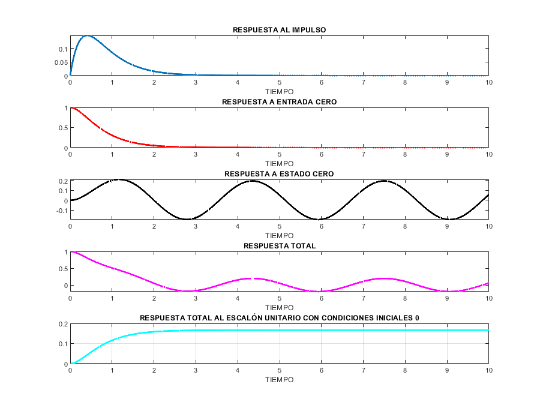 PROBLEMA 2
Un péndulo doble oscila en un plano vertical bajo la accion de la gravedad. Para desplazamiento pequeños 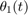 y 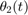, es posible demostrar que las ecuaciones diferenciales del movimiento son:
- 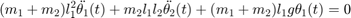
- 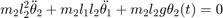
- donde , 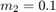, 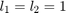, 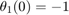, 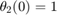, 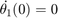 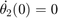.
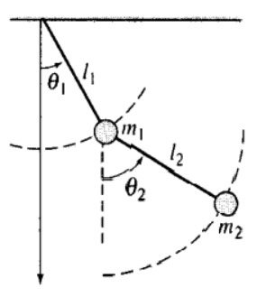
- Realiza la solución símbolica y gráfica las soluciones
- Implementa las simulación en Simulink, reporta las gráficas de las soluciones
- Reporta las gráficas de las soluciones, numérica y simbólica en la misma figura, una para cada solución.
Para obtener la solucion simbolica y la gráfica, tenemos el siguiente código:
syms m1 m2 l1 l2 tetha1(t) tetha2(t) dtetha1(t) dtetha2(t) s assume([t m1 m2 l1 l2 ]) g=9.81; dteh1=diff(tetha1,t,2); dteh2=diff(tetha2,t,2); eqn1=(m1+m2)*dteh1 + m2*l1*l2*dteh2 + (m1+m2)*l1*g*tetha1; eqn2=m2*(l2^2)*dteh2 + m2*l1*l2*dteh1 + m2*l2*g*tetha2; eqn1LT=laplace(eqn1,t,s) eqn2LT=laplace(eqn2,t,s) syms tetha1_LT tetha2_LT eqn1LT=subs(eqn1LT,[laplace(tetha1,t,s) laplace(tetha2,t,s)],[tetha1_LT tetha2_LT]) eqn2LT=subs(eqn2LT,[laplace(tetha1,t,s) laplace(tetha2,t,s)],[tetha1_LT tetha2_LT]) eqns=[eqn1LT eqn2LT] vars=[tetha1_LT tetha2_LT] [tetha1_LT, tetha2_LT]=solve(eqns,vars) %%inversa de laplace tetha1sol=ilaplace(tetha1_LT,s,t) tetha2sol=ilaplace(tetha2_LT,s,t) tetha2sol=simplify(tetha1sol) tetha2sol=simplify(tetha2sol) %%condiciones iniciales dtetha1(t)= diff(tetha1(t), t) dtetha2(t)= diff(tetha2(t), t) vars=[m1 m2 l1 l2 tetha1(0) tetha2(0) dtetha1(0) dtetha2(0)]; values=[0.1 0.1 1 1 -1 1 0 0] tetha1sol=subs(tetha1sol,vars,values) tetha2sol=subs(tetha2sol,vars,values) % % Graficas subplot(2,2,1) fplot(tetha1sol,[0 15]) title('angulo 1') ylabel('tetha1(t)') xlabel('t') subplot(2,2,2) fplot(tetha2sol,[0 15]) title('Angulo 2') ylabel('tetha2(t)') xlabel('t') subplot(2,2,3) fplot(tetha1sol,[0 25]) title('Angulo 1') ylabel('tetha1(t)') xlabel('t') text(3,-0.1,'Transient') text(15,-0.07,'Steady State') subplot(2,2,4) fplot(tetha2sol,[2 25]) title('Angulo 2') ylabel('tetha2(t)') xlabel('t') text(3,0.35,'Transient') text(15,0.22,'Steady State')
eqn1LT =
(981*l1*(m1 + m2)*laplace(tetha1(t), t, s))/100 - (m1 + m2)*(s*tetha1(0) - s^2*laplace(tetha1(t), t, s) + subs(diff(tetha1(t), t), t, 0)) - l1*l2*m2*(s*tetha2(0) - s^2*laplace(tetha2(t), t, s) + subs(diff(tetha2(t), t), t, 0))
eqn2LT =
(981*l2*m2*laplace(tetha2(t), t, s))/100 - l2^2*m2*(s*tetha2(0) - s^2*laplace(tetha2(t), t, s) + subs(diff(tetha2(t), t), t, 0)) - l1*l2*m2*(s*tetha1(0) - s^2*laplace(tetha1(t), t, s) + subs(diff(tetha1(t), t), t, 0))
eqn1LT =
(981*l1*tetha1_LT*(m1 + m2))/100 - (m1 + m2)*(- tetha1_LT*s^2 + tetha1(0)*s + subs(diff(tetha1(t), t), t, 0)) - l1*l2*m2*(- tetha2_LT*s^2 + tetha2(0)*s + subs(diff(tetha2(t), t), t, 0))
eqn2LT =
(981*l2*m2*tetha2_LT)/100 - l2^2*m2*(- tetha2_LT*s^2 + tetha2(0)*s + subs(diff(tetha2(t), t), t, 0)) - l1*l2*m2*(- tetha1_LT*s^2 + tetha1(0)*s + subs(diff(tetha1(t), t), t, 0))
eqns =
[(981*l1*tetha1_LT*(m1 + m2))/100 - (m1 + m2)*(- tetha1_LT*s^2 + tetha1(0)*s + subs(diff(tetha1(t), t), t, 0)) - l1*l2*m2*(- tetha2_LT*s^2 + tetha2(0)*s + subs(diff(tetha2(t), t), t, 0)), (981*l2*m2*tetha2_LT)/100 - l2^2*m2*(- tetha2_LT*s^2 + tetha2(0)*s + subs(diff(tetha2(t), t), t, 0)) - l1*l2*m2*(- tetha1_LT*s^2 + tetha1(0)*s + subs(diff(tetha1(t), t), t, 0))]
vars =
[tetha1_LT, tetha2_LT]
tetha1_LT =
(100*(981*m1*subs(diff(tetha1(t), t), t, 0) + 981*m2*subs(diff(tetha1(t), t), t, 0) + 981*m1*s*tetha1(0) + 981*m2*s*tetha1(0) + 981*l1*l2*m2*subs(diff(tetha2(t), t), t, 0) + 100*l2*m1*s^3*tetha1(0) + 100*l2*m2*s^3*tetha1(0) + 100*l2*m1*s^2*subs(diff(tetha1(t), t), t, 0) + 100*l2*m2*s^2*subs(diff(tetha1(t), t), t, 0) - 100*l1^2*l2*m2*s^3*tetha1(0) - 100*l1^2*l2*m2*s^2*subs(diff(tetha1(t), t), t, 0) + 981*l1*l2*m2*s*tetha2(0)))/(962361*l1*m1 + 962361*l1*m2 + 98100*m1*s^2 + 98100*m2*s^2 + 10000*l2*m1*s^4 + 10000*l2*m2*s^4 + 98100*l1*l2*m1*s^2 + 98100*l1*l2*m2*s^2 - 10000*l1^2*l2*m2*s^4)
tetha2_LT =
(100*(981*l1^2*m1*subs(diff(tetha1(t), t), t, 0) + 981*l1^2*m2*subs(diff(tetha1(t), t), t, 0) + 981*l1*l2*m1*subs(diff(tetha2(t), t), t, 0) + 981*l1*l2*m2*subs(diff(tetha2(t), t), t, 0) + 981*l1^2*m1*s*tetha1(0) + 981*l1^2*m2*s*tetha1(0) + 100*l2*m1*s^3*tetha2(0) + 100*l2*m2*s^3*tetha2(0) + 100*l2*m1*s^2*subs(diff(tetha2(t), t), t, 0) + 100*l2*m2*s^2*subs(diff(tetha2(t), t), t, 0) - 100*l1^2*l2*m2*s^3*tetha2(0) - 100*l1^2*l2*m2*s^2*subs(diff(tetha2(t), t), t, 0) + 981*l1*l2*m1*s*tetha2(0) + 981*l1*l2*m2*s*tetha2(0)))/(962361*l1*m1 + 962361*l1*m2 + 98100*m1*s^2 + 98100*m2*s^2 + 10000*l2*m1*s^4 + 10000*l2*m2*s^4 + 98100*l1*l2*m1*s^2 + 98100*l1*l2*m2*s^2 - 10000*l1^2*l2*m2*s^4)
tetha1sol =
98100*m1*subs(diff(tetha1(t), t), t, 0)*symsum(exp(t*root(10000*l1^2*l2*m2*z^4 - 10000*l2*m2*z^4 - 10000*l2*m1*z^4 - 98100*l1*l2*m2*z^2 - 98100*l1*l2*m1*z^2 - 98100*m2*z^2 - 98100*m1*z^2 - 962361*l1*m2 - 962361*l1*m1, z, k))/(200*(981*m1*root(10000*l1^2*l2*m2*z^4 - 10000*l2*m2*z^4 - 10000*l2*m1*z^4 - 98100*l1*l2*m2*z^2 - 98100*l1*l2*m1*z^2 - 98100*m2*z^2 - 98100*m1*z^2 - 962361*l1*m2 - 962361*l1*m1, z, k) + 981*m2*root(10000*l1^2*l2*m2*z^4 - 10000*l2*m2*z^4 - 10000*l2*m1*z^4 - 98100*l1*l2*m2*z^2 - 98100*l1*l2*m1*z^2 - 98100*m2*z^2 - 98100*m1*z^2 - 962361*l1*m2 - 962361*l1*m1, z, k) + 200*l2*m1*root(10000*l1^2*l2*m2*z^4 - 10000*l2*m2*z^4 - 10000*l2*m1*z^4 - 98100*l1*l2*m2*z^2 - 98100*l1*l2*m1*z^2 - 98100*m2*z^2 - 98100*m1*z^2 - 962361*l1*m2 - 962361*l1*m1, z, k)^3 + 200*l2*m2*root(10000*l1^2*l2*m2*z^4 - 10000*l2*m2*z^4 - 10000*l2*m1*z^4 - 98100*l1*l2*m2*z^2 - 98100*l1*l2*m1*z^2 - 98100*m2*z^2 - 98100*m1*z^2 - 962361*l1*m2 - 962361*l1*m1, z, k)^3 - 200*l1^2*l2*m2*root(10000*l1^2*l2*m2*z^4 - 10000*l2*m2*z^4 - 10000*l2*m1*z^4 - 98100*l1*l2*m2*z^2 - 98100*l1*l2*m1*z^2 - 98100*m2*z^2 - 98100*m1*z^2 - 962361*l1*m2 - 962361*l1*m1, z, k)^3 + 981*l1*l2*m1*root(10000*l1^2*l2*m2*z^4 - 10000*l2*m2*z^4 - 10000*l2*m1*z^4 - 98100*l1*l2*m2*z^2 - 98100*l1*l2*m1*z^2 - 98100*m2*z^2 - 98100*m1*z^2 - 962361*l1*m2 - 962361*l1*m1, z, k) + 981*l1*l2*m2*root(10000*l1^2*l2*m2*z^4 - 10000*l2*m2*z^4 - 10000*l2*m1*z^4 - 98100*l1*l2*m2*z^2 - 98100*l1*l2*m1*z^2 - 98100*m2*z^2 - 98100*m1*z^2 - 962361*l1*m2 - 962361*l1*m1, z, k))), k, 1, 4) + 98100*m2*subs(diff(tetha1(t), t), t, 0)*symsum(exp(t*root(10000*l1^2*l2*m2*z^4 - 10000*l2*m2*z^4 - 10000*l2*m1*z^4 - 98100*l1*l2*m2*z^2 - 98100*l1*l2*m1*z^2 - 98100*m2*z^2 - 98100*m1*z^2 - 962361*l1*m2 - 962361*l1*m1, z, k))/(200*(981*m1*root(10000*l1^2*l2*m2*z^4 - 10000*l2*m2*z^4 - 10000*l2*m1*z^4 - 98100*l1*l2*m2*z^2 - 98100*l1*l2*m1*z^2 - 98100*m2*z^2 - 98100*m1*z^2 - 962361*l1*m2 - 962361*l1*m1, z, k) + 981*m2*root(10000*l1^2*l2*m2*z^4 - 10000*l2*m2*z^4 - 10000*l2*m1*z^4 - 98100*l1*l2*m2*z^2 - 98100*l1*l2*m1*z^2 - 98100*m2*z^2 - 98100*m1*z^2 - 962361*l1*m2 - 962361*l1*m1, z, k) + 200*l2*m1*root(10000*l1^2*l2*m2*z^4 - 10000*l2*m2*z^4 - 10000*l2*m1*z^4 - 98100*l1*l2*m2*z^2 - 98100*l1*l2*m1*z^2 - 98100*m2*z^2 - 98100*m1*z^2 - 962361*l1*m2 - 962361*l1*m1, z, k)^3 + 200*l2*m2*root(10000*l1^2*l2*m2*z^4 - 10000*l2*m2*z^4 - 10000*l2*m1*z^4 - 98100*l1*l2*m2*z^2 - 98100*l1*l2*m1*z^2 - 98100*m2*z^2 - 98100*m1*z^2 - 962361*l1*m2 - 962361*l1*m1, z, k)^3 - 200*l1^2*l2*m2*root(10000*l1^2*l2*m2*z^4 - 10000*l2*m2*z^4 - 10000*l2*m1*z^4 - 98100*l1*l2*m2*z^2 - 98100*l1*l2*m1*z^2 - 98100*m2*z^2 - 98100*m1*z^2 - 962361*l1*m2 - 962361*l1*m1, z, k)^3 + 981*l1*l2*m1*root(10000*l1^2*l2*m2*z^4 - 10000*l2*m2*z^4 - 10000*l2*m1*z^4 - 98100*l1*l2*m2*z^2 - 98100*l1*l2*m1*z^2 - 98100*m2*z^2 - 98100*m1*z^2 - 962361*l1*m2 - 962361*l1*m1, z, k) + 981*l1*l2*m2*root(10000*l1^2*l2*m2*z^4 - 10000*l2*m2*z^4 - 10000*l2*m1*z^4 - 98100*l1*l2*m2*z^2 - 98100*l1*l2*m1*z^2 - 98100*m2*z^2 - 98100*m1*z^2 - 962361*l1*m2 - 962361*l1*m1, z, k))), k, 1, 4) + 98100*m1*tetha1(0)*symsum(exp(t*root(10000*l1^2*l2*m2*z^4 - 10000*l2*m2*z^4 - 10000*l2*m1*z^4 - 98100*l1*l2*m2*z^2 - 98100*l1*l2*m1*z^2 - 98100*m2*z^2 - 98100*m1*z^2 - 962361*l1*m2 - 962361*l1*m1, z, k))/(200*(981*m1 + 981*m2 + 981*l1*l2*m1 + 981*l1*l2*m2 + 200*l2*m1*root(10000*l1^2*l2*m2*z^4 - 10000*l2*m2*z^4 - 10000*l2*m1*z^4 - 98100*l1*l2*m2*z^2 - 98100*l1*l2*m1*z^2 - 98100*m2*z^2 - 98100*m1*z^2 - 962361*l1*m2 - 962361*l1*m1, z, k)^2 + 200*l2*m2*root(10000*l1^2*l2*m2*z^4 - 10000*l2*m2*z^4 - 10000*l2*m1*z^4 - 98100*l1*l2*m2*z^2 - 98100*l1*l2*m1*z^2 - 98100*m2*z^2 - 98100*m1*z^2 - 962361*l1*m2 - 962361*l1*m1, z, k)^2 - 200*l1^2*l2*m2*root(10000*l1^2*l2*m2*z^4 - 10000*l2*m2*z^4 - 10000*l2*m1*z^4 - 98100*l1*l2*m2*z^2 - 98100*l1*l2*m1*z^2 - 98100*m2*z^2 - 98100*m1*z^2 - 962361*l1*m2 - 962361*l1*m1, z, k)^2)), k, 1, 4) + 98100*m2*tetha1(0)*symsum(exp(t*root(10000*l1^2*l2*m2*z^4 - 10000*l2*m2*z^4 - 10000*l2*m1*z^4 - 98100*l1*l2*m2*z^2 - 98100*l1*l2*m1*z^2 - 98100*m2*z^2 - 98100*m1*z^2 - 962361*l1*m2 - 962361*l1*m1, z, k))/(200*(981*m1 + 981*m2 + 981*l1*l2*m1 + 981*l1*l2*m2 + 200*l2*m1*root(10000*l1^2*l2*m2*z^4 - 10000*l2*m2*z^4 - 10000*l2*m1*z^4 - 98100*l1*l2*m2*z^2 - 98100*l1*l2*m1*z^2 - 98100*m2*z^2 - 98100*m1*z^2 - 962361*l1*m2 - 962361*l1*m1, z, k)^2 + 200*l2*m2*root(10000*l1^2*l2*m2*z^4 - 10000*l2*m2*z^4 - 10000*l2*m1*z^4 - 98100*l1*l2*m2*z^2 - 98100*l1*l2*m1*z^2 - 98100*m2*z^2 - 98100*m1*z^2 - 962361*l1*m2 - 962361*l1*m1, z, k)^2 - 200*l1^2*l2*m2*root(10000*l1^2*l2*m2*z^4 - 10000*l2*m2*z^4 - 10000*l2*m1*z^4 - 98100*l1*l2*m2*z^2 - 98100*l1*l2*m1*z^2 - 98100*m2*z^2 - 98100*m1*z^2 - 962361*l1*m2 - 962361*l1*m1, z, k)^2)), k, 1, 4) + 10000*l2*m1*tetha1(0)*symsum((exp(t*root(10000*l1^2*l2*m2*z^4 - 10000*l2*m2*z^4 - 10000*l2*m1*z^4 - 98100*l1*l2*m2*z^2 - 98100*l1*l2*m1*z^2 - 98100*m2*z^2 - 98100*m1*z^2 - 962361*l1*m2 - 962361*l1*m1, z, k))*root(10000*l1^2*l2*m2*z^4 - 10000*l2*m2*z^4 - 10000*l2*m1*z^4 - 98100*l1*l2*m2*z^2 - 98100*l1*l2*m1*z^2 - 98100*m2*z^2 - 98100*m1*z^2 - 962361*l1*m2 - 962361*l1*m1, z, k)^2)/(200*(981*m1 + 981*m2 + 981*l1*l2*m1 + 981*l1*l2*m2 + 200*l2*m1*root(10000*l1^2*l2*m2*z^4 - 10000*l2*m2*z^4 - 10000*l2*m1*z^4 - 98100*l1*l2*m2*z^2 - 98100*l1*l2*m1*z^2 - 98100*m2*z^2 - 98100*m1*z^2 - 962361*l1*m2 - 962361*l1*m1, z, k)^2 + 200*l2*m2*root(10000*l1^2*l2*m2*z^4 - 10000*l2*m2*z^4 - 10000*l2*m1*z^4 - 98100*l1*l2*m2*z^2 - 98100*l1*l2*m1*z^2 - 98100*m2*z^2 - 98100*m1*z^2 - 962361*l1*m2 - 962361*l1*m1, z, k)^2 - 200*l1^2*l2*m2*root(10000*l1^2*l2*m2*z^4 - 10000*l2*m2*z^4 - 10000*l2*m1*z^4 - 98100*l1*l2*m2*z^2 - 98100*l1*l2*m1*z^2 - 98100*m2*z^2 - 98100*m1*z^2 - 962361*l1*m2 - 962361*l1*m1, z, k)^2)), k, 1, 4) + 10000*l2*m2*tetha1(0)*symsum((exp(t*root(10000*l1^2*l2*m2*z^4 - 10000*l2*m2*z^4 - 10000*l2*m1*z^4 - 98100*l1*l2*m2*z^2 - 98100*l1*l2*m1*z^2 - 98100*m2*z^2 - 98100*m1*z^2 - 962361*l1*m2 - 962361*l1*m1, z, k))*root(10000*l1^2*l2*m2*z^4 - 10000*l2*m2*z^4 - 10000*l2*m1*z^4 - 98100*l1*l2*m2*z^2 - 98100*l1*l2*m1*z^2 - 98100*m2*z^2 - 98100*m1*z^2 - 962361*l1*m2 - 962361*l1*m1, z, k)^2)/(200*(981*m1 + 981*m2 + 981*l1*l2*m1 + 981*l1*l2*m2 + 200*l2*m1*root(10000*l1^2*l2*m2*z^4 - 10000*l2*m2*z^4 - 10000*l2*m1*z^4 - 98100*l1*l2*m2*z^2 - 98100*l1*l2*m1*z^2 - 98100*m2*z^2 - 98100*m1*z^2 - 962361*l1*m2 - 962361*l1*m1, z, k)^2 + 200*l2*m2*root(10000*l1^2*l2*m2*z^4 - 10000*l2*m2*z^4 - 10000*l2*m1*z^4 - 98100*l1*l2*m2*z^2 - 98100*l1*l2*m1*z^2 - 98100*m2*z^2 - 98100*m1*z^2 - 962361*l1*m2 - 962361*l1*m1, z, k)^2 - 200*l1^2*l2*m2*root(10000*l1^2*l2*m2*z^4 - 10000*l2*m2*z^4 - 10000*l2*m1*z^4 - 98100*l1*l2*m2*z^2 - 98100*l1*l2*m1*z^2 - 98100*m2*z^2 - 98100*m1*z^2 - 962361*l1*m2 - 962361*l1*m1, z, k)^2)), k, 1, 4) + 10000*l2*m1*subs(diff(tetha1(t), t), t, 0)*symsum((exp(root(10000*l1^2*l2*m2*z^4 - 10000*l2*m2*z^4 - 10000*l2*m1*z^4 - 98100*l1*l2*m2*z^2 - 98100*l1*l2*m1*z^2 - 98100*m2*z^2 - 98100*m1*z^2 - 962361*l1*m2 - 962361*l1*m1, z, k)*t)*root(10000*l1^2*l2*m2*z^4 - 10000*l2*m2*z^4 - 10000*l2*m1*z^4 - 98100*l1*l2*m2*z^2 - 98100*l1*l2*m1*z^2 - 98100*m2*z^2 - 98100*m1*z^2 - 962361*l1*m2 - 962361*l1*m1, z, k))/(200*(981*m1 + 981*m2 + 981*l1*l2*m1 + 981*l1*l2*m2 + 200*root(10000*l1^2*l2*m2*z^4 - 10000*l2*m2*z^4 - 10000*l2*m1*z^4 - 98100*l1*l2*m2*z^2 - 98100*l1*l2*m1*z^2 - 98100*m2*z^2 - 98100*m1*z^2 - 962361*l1*m2 - 962361*l1*m1, z, k)^2*l2*m1 + 200*root(10000*l1^2*l2*m2*z^4 - 10000*l2*m2*z^4 - 10000*l2*m1*z^4 - 98100*l1*l2*m2*z^2 - 98100*l1*l2*m1*z^2 - 98100*m2*z^2 - 98100*m1*z^2 - 962361*l1*m2 - 962361*l1*m1, z, k)^2*l2*m2 - 200*root(10000*l1^2*l2*m2*z^4 - 10000*l2*m2*z^4 - 10000*l2*m1*z^4 - 98100*l1*l2*m2*z^2 - 98100*l1*l2*m1*z^2 - 98100*m2*z^2 - 98100*m1*z^2 - 962361*l1*m2 - 962361*l1*m1, z, k)^2*l1^2*l2*m2)), k, 1, 4) + 10000*l2*m2*subs(diff(tetha1(t), t), t, 0)*symsum((exp(root(10000*l1^2*l2*m2*z^4 - 10000*l2*m2*z^4 - 10000*l2*m1*z^4 - 98100*l1*l2*m2*z^2 - 98100*l1*l2*m1*z^2 - 98100*m2*z^2 - 98100*m1*z^2 - 962361*l1*m2 - 962361*l1*m1, z, k)*t)*root(10000*l1^2*l2*m2*z^4 - 10000*l2*m2*z^4 - 10000*l2*m1*z^4 - 98100*l1*l2*m2*z^2 - 98100*l1*l2*m1*z^2 - 98100*m2*z^2 - 98100*m1*z^2 - 962361*l1*m2 - 962361*l1*m1, z, k))/(200*(981*m1 + 981*m2 + 981*l1*l2*m1 + 981*l1*l2*m2 + 200*root(10000*l1^2*l2*m2*z^4 - 10000*l2*m2*z^4 - 10000*l2*m1*z^4 - 98100*l1*l2*m2*z^2 - 98100*l1*l2*m1*z^2 - 98100*m2*z^2 - 98100*m1*z^2 - 962361*l1*m2 - 962361*l1*m1, z, k)^2*l2*m1 + 200*root(10000*l1^2*l2*m2*z^4 - 10000*l2*m2*z^4 - 10000*l2*m1*z^4 - 98100*l1*l2*m2*z^2 - 98100*l1*l2*m1*z^2 - 98100*m2*z^2 - 98100*m1*z^2 - 962361*l1*m2 - 962361*l1*m1, z, k)^2*l2*m2 - 200*root(10000*l1^2*l2*m2*z^4 - 10000*l2*m2*z^4 - 10000*l2*m1*z^4 - 98100*l1*l2*m2*z^2 - 98100*l1*l2*m1*z^2 - 98100*m2*z^2 - 98100*m1*z^2 - 962361*l1*m2 - 962361*l1*m1, z, k)^2*l1^2*l2*m2)), k, 1, 4) + 98100*l1*l2*m2*subs(diff(tetha2(t), t), t, 0)*symsum(exp(t*root(10000*l1^2*l2*m2*z^4 - 10000*l2*m2*z^4 - 10000*l2*m1*z^4 - 98100*l1*l2*m2*z^2 - 98100*l1*l2*m1*z^2 - 98100*m2*z^2 - 98100*m1*z^2 - 962361*l1*m2 - 962361*l1*m1, z, k))/(200*(981*m1*root(10000*l1^2*l2*m2*z^4 - 10000*l2*m2*z^4 - 10000*l2*m1*z^4 - 98100*l1*l2*m2*z^2 - 98100*l1*l2*m1*z^2 - 98100*m2*z^2 - 98100*m1*z^2 - 962361*l1*m2 - 962361*l1*m1, z, k) + 981*m2*root(10000*l1^2*l2*m2*z^4 - 10000*l2*m2*z^4 - 10000*l2*m1*z^4 - 98100*l1*l2*m2*z^2 - 98100*l1*l2*m1*z^2 - 98100*m2*z^2 - 98100*m1*z^2 - 962361*l1*m2 - 962361*l1*m1, z, k) + 200*l2*m1*root(10000*l1^2*l2*m2*z^4 - 10000*l2*m2*z^4 - 10000*l2*m1*z^4 - 98100*l1*l2*m2*z^2 - 98100*l1*l2*m1*z^2 - 98100*m2*z^2 - 98100*m1*z^2 - 962361*l1*m2 - 962361*l1*m1, z, k)^3 + 200*l2*m2*root(10000*l1^2*l2*m2*z^4 - 10000*l2*m2*z^4 - 10000*l2*m1*z^4 - 98100*l1*l2*m2*z^2 - 98100*l1*l2*m1*z^2 - 98100*m2*z^2 - 98100*m1*z^2 - 962361*l1*m2 - 962361*l1*m1, z, k)^3 - 200*l1^2*l2*m2*root(10000*l1^2*l2*m2*z^4 - 10000*l2*m2*z^4 - 10000*l2*m1*z^4 - 98100*l1*l2*m2*z^2 - 98100*l1*l2*m1*z^2 - 98100*m2*z^2 - 98100*m1*z^2 - 962361*l1*m2 - 962361*l1*m1, z, k)^3 + 981*l1*l2*m1*root(10000*l1^2*l2*m2*z^4 - 10000*l2*m2*z^4 - 10000*l2*m1*z^4 - 98100*l1*l2*m2*z^2 - 98100*l1*l2*m1*z^2 - 98100*m2*z^2 - 98100*m1*z^2 - 962361*l1*m2 - 962361*l1*m1, z, k) + 981*l1*l2*m2*root(10000*l1^2*l2*m2*z^4 - 10000*l2*m2*z^4 - 10000*l2*m1*z^4 - 98100*l1*l2*m2*z^2 - 98100*l1*l2*m1*z^2 - 98100*m2*z^2 - 98100*m1*z^2 - 962361*l1*m2 - 962361*l1*m1, z, k))), k, 1, 4) - 10000*l1^2*l2*m2*subs(diff(tetha1(t), t), t, 0)*symsum((exp(root(10000*l1^2*l2*m2*z^4 - 10000*l2*m2*z^4 - 10000*l2*m1*z^4 - 98100*l1*l2*m2*z^2 - 98100*l1*l2*m1*z^2 - 98100*m2*z^2 - 98100*m1*z^2 - 962361*l1*m2 - 962361*l1*m1, z, k)*t)*root(10000*l1^2*l2*m2*z^4 - 10000*l2*m2*z^4 - 10000*l2*m1*z^4 - 98100*l1*l2*m2*z^2 - 98100*l1*l2*m1*z^2 - 98100*m2*z^2 - 98100*m1*z^2 - 962361*l1*m2 - 962361*l1*m1, z, k))/(200*(981*m1 + 981*m2 + 981*l1*l2*m1 + 981*l1*l2*m2 + 200*root(10000*l1^2*l2*m2*z^4 - 10000*l2*m2*z^4 - 10000*l2*m1*z^4 - 98100*l1*l2*m2*z^2 - 98100*l1*l2*m1*z^2 - 98100*m2*z^2 - 98100*m1*z^2 - 962361*l1*m2 - 962361*l1*m1, z, k)^2*l2*m1 + 200*root(10000*l1^2*l2*m2*z^4 - 10000*l2*m2*z^4 - 10000*l2*m1*z^4 - 98100*l1*l2*m2*z^2 - 98100*l1*l2*m1*z^2 - 98100*m2*z^2 - 98100*m1*z^2 - 962361*l1*m2 - 962361*l1*m1, z, k)^2*l2*m2 - 200*root(10000*l1^2*l2*m2*z^4 - 10000*l2*m2*z^4 - 10000*l2*m1*z^4 - 98100*l1*l2*m2*z^2 - 98100*l1*l2*m1*z^2 - 98100*m2*z^2 - 98100*m1*z^2 - 962361*l1*m2 - 962361*l1*m1, z, k)^2*l1^2*l2*m2)), k, 1, 4) + 98100*l1*l2*m2*tetha2(0)*symsum(exp(t*root(10000*l1^2*l2*m2*z^4 - 10000*l2*m2*z^4 - 10000*l2*m1*z^4 - 98100*l1*l2*m2*z^2 - 98100*l1*l2*m1*z^2 - 98100*m2*z^2 - 98100*m1*z^2 - 962361*l1*m2 - 962361*l1*m1, z, k))/(200*(981*m1 + 981*m2 + 981*l1*l2*m1 + 981*l1*l2*m2 + 200*l2*m1*root(10000*l1^2*l2*m2*z^4 - 10000*l2*m2*z^4 - 10000*l2*m1*z^4 - 98100*l1*l2*m2*z^2 - 98100*l1*l2*m1*z^2 - 98100*m2*z^2 - 98100*m1*z^2 - 962361*l1*m2 - 962361*l1*m1, z, k)^2 + 200*l2*m2*root(10000*l1^2*l2*m2*z^4 - 10000*l2*m2*z^4 - 10000*l2*m1*z^4 - 98100*l1*l2*m2*z^2 - 98100*l1*l2*m1*z^2 - 98100*m2*z^2 - 98100*m1*z^2 - 962361*l1*m2 - 962361*l1*m1, z, k)^2 - 200*l1^2*l2*m2*root(10000*l1^2*l2*m2*z^4 - 10000*l2*m2*z^4 - 10000*l2*m1*z^4 - 98100*l1*l2*m2*z^2 - 98100*l1*l2*m1*z^2 - 98100*m2*z^2 - 98100*m1*z^2 - 962361*l1*m2 - 962361*l1*m1, z, k)^2)), k, 1, 4) - 10000*l1^2*l2*m2*tetha1(0)*symsum((exp(t*root(10000*l1^2*l2*m2*z^4 - 10000*l2*m2*z^4 - 10000*l2*m1*z^4 - 98100*l1*l2*m2*z^2 - 98100*l1*l2*m1*z^2 - 98100*m2*z^2 - 98100*m1*z^2 - 962361*l1*m2 - 962361*l1*m1, z, k))*root(10000*l1^2*l2*m2*z^4 - 10000*l2*m2*z^4 - 10000*l2*m1*z^4 - 98100*l1*l2*m2*z^2 - 98100*l1*l2*m1*z^2 - 98100*m2*z^2 - 98100*m1*z^2 - 962361*l1*m2 - 962361*l1*m1, z, k)^2)/(200*(981*m1 + 981*m2 + 981*l1*l2*m1 + 981*l1*l2*m2 + 200*l2*m1*root(10000*l1^2*l2*m2*z^4 - 10000*l2*m2*z^4 - 10000*l2*m1*z^4 - 98100*l1*l2*m2*z^2 - 98100*l1*l2*m1*z^2 - 98100*m2*z^2 - 98100*m1*z^2 - 962361*l1*m2 - 962361*l1*m1, z, k)^2 + 200*l2*m2*root(10000*l1^2*l2*m2*z^4 - 10000*l2*m2*z^4 - 10000*l2*m1*z^4 - 98100*l1*l2*m2*z^2 - 98100*l1*l2*m1*z^2 - 98100*m2*z^2 - 98100*m1*z^2 - 962361*l1*m2 - 962361*l1*m1, z, k)^2 - 200*l1^2*l2*m2*root(10000*l1^2*l2*m2*z^4 - 10000*l2*m2*z^4 - 10000*l2*m1*z^4 - 98100*l1*l2*m2*z^2 - 98100*l1*l2*m1*z^2 - 98100*m2*z^2 - 98100*m1*z^2 - 962361*l1*m2 - 962361*l1*m1, z, k)^2)), k, 1, 4)
tetha2sol =
98100*l1^2*m1*subs(diff(tetha1(t), t), t, 0)*symsum(exp(t*root(10000*l1^2*l2*m2*z^4 - 10000*l2*m2*z^4 - 10000*l2*m1*z^4 - 98100*l1*l2*m2*z^2 - 98100*l1*l2*m1*z^2 - 98100*m2*z^2 - 98100*m1*z^2 - 962361*l1*m2 - 962361*l1*m1, z, k))/(200*(981*m1*root(10000*l1^2*l2*m2*z^4 - 10000*l2*m2*z^4 - 10000*l2*m1*z^4 - 98100*l1*l2*m2*z^2 - 98100*l1*l2*m1*z^2 - 98100*m2*z^2 - 98100*m1*z^2 - 962361*l1*m2 - 962361*l1*m1, z, k) + 981*m2*root(10000*l1^2*l2*m2*z^4 - 10000*l2*m2*z^4 - 10000*l2*m1*z^4 - 98100*l1*l2*m2*z^2 - 98100*l1*l2*m1*z^2 - 98100*m2*z^2 - 98100*m1*z^2 - 962361*l1*m2 - 962361*l1*m1, z, k) + 200*l2*m1*root(10000*l1^2*l2*m2*z^4 - 10000*l2*m2*z^4 - 10000*l2*m1*z^4 - 98100*l1*l2*m2*z^2 - 98100*l1*l2*m1*z^2 - 98100*m2*z^2 - 98100*m1*z^2 - 962361*l1*m2 - 962361*l1*m1, z, k)^3 + 200*l2*m2*root(10000*l1^2*l2*m2*z^4 - 10000*l2*m2*z^4 - 10000*l2*m1*z^4 - 98100*l1*l2*m2*z^2 - 98100*l1*l2*m1*z^2 - 98100*m2*z^2 - 98100*m1*z^2 - 962361*l1*m2 - 962361*l1*m1, z, k)^3 - 200*l1^2*l2*m2*root(10000*l1^2*l2*m2*z^4 - 10000*l2*m2*z^4 - 10000*l2*m1*z^4 - 98100*l1*l2*m2*z^2 - 98100*l1*l2*m1*z^2 - 98100*m2*z^2 - 98100*m1*z^2 - 962361*l1*m2 - 962361*l1*m1, z, k)^3 + 981*l1*l2*m1*root(10000*l1^2*l2*m2*z^4 - 10000*l2*m2*z^4 - 10000*l2*m1*z^4 - 98100*l1*l2*m2*z^2 - 98100*l1*l2*m1*z^2 - 98100*m2*z^2 - 98100*m1*z^2 - 962361*l1*m2 - 962361*l1*m1, z, k) + 981*l1*l2*m2*root(10000*l1^2*l2*m2*z^4 - 10000*l2*m2*z^4 - 10000*l2*m1*z^4 - 98100*l1*l2*m2*z^2 - 98100*l1*l2*m1*z^2 - 98100*m2*z^2 - 98100*m1*z^2 - 962361*l1*m2 - 962361*l1*m1, z, k))), k, 1, 4) + 98100*l1^2*m2*subs(diff(tetha1(t), t), t, 0)*symsum(exp(t*root(10000*l1^2*l2*m2*z^4 - 10000*l2*m2*z^4 - 10000*l2*m1*z^4 - 98100*l1*l2*m2*z^2 - 98100*l1*l2*m1*z^2 - 98100*m2*z^2 - 98100*m1*z^2 - 962361*l1*m2 - 962361*l1*m1, z, k))/(200*(981*m1*root(10000*l1^2*l2*m2*z^4 - 10000*l2*m2*z^4 - 10000*l2*m1*z^4 - 98100*l1*l2*m2*z^2 - 98100*l1*l2*m1*z^2 - 98100*m2*z^2 - 98100*m1*z^2 - 962361*l1*m2 - 962361*l1*m1, z, k) + 981*m2*root(10000*l1^2*l2*m2*z^4 - 10000*l2*m2*z^4 - 10000*l2*m1*z^4 - 98100*l1*l2*m2*z^2 - 98100*l1*l2*m1*z^2 - 98100*m2*z^2 - 98100*m1*z^2 - 962361*l1*m2 - 962361*l1*m1, z, k) + 200*l2*m1*root(10000*l1^2*l2*m2*z^4 - 10000*l2*m2*z^4 - 10000*l2*m1*z^4 - 98100*l1*l2*m2*z^2 - 98100*l1*l2*m1*z^2 - 98100*m2*z^2 - 98100*m1*z^2 - 962361*l1*m2 - 962361*l1*m1, z, k)^3 + 200*l2*m2*root(10000*l1^2*l2*m2*z^4 - 10000*l2*m2*z^4 - 10000*l2*m1*z^4 - 98100*l1*l2*m2*z^2 - 98100*l1*l2*m1*z^2 - 98100*m2*z^2 - 98100*m1*z^2 - 962361*l1*m2 - 962361*l1*m1, z, k)^3 - 200*l1^2*l2*m2*root(10000*l1^2*l2*m2*z^4 - 10000*l2*m2*z^4 - 10000*l2*m1*z^4 - 98100*l1*l2*m2*z^2 - 98100*l1*l2*m1*z^2 - 98100*m2*z^2 - 98100*m1*z^2 - 962361*l1*m2 - 962361*l1*m1, z, k)^3 + 981*l1*l2*m1*root(10000*l1^2*l2*m2*z^4 - 10000*l2*m2*z^4 - 10000*l2*m1*z^4 - 98100*l1*l2*m2*z^2 - 98100*l1*l2*m1*z^2 - 98100*m2*z^2 - 98100*m1*z^2 - 962361*l1*m2 - 962361*l1*m1, z, k) + 981*l1*l2*m2*root(10000*l1^2*l2*m2*z^4 - 10000*l2*m2*z^4 - 10000*l2*m1*z^4 - 98100*l1*l2*m2*z^2 - 98100*l1*l2*m1*z^2 - 98100*m2*z^2 - 98100*m1*z^2 - 962361*l1*m2 - 962361*l1*m1, z, k))), k, 1, 4) + 10000*l2*m1*tetha2(0)*symsum((exp(t*root(10000*l1^2*l2*m2*z^4 - 10000*l2*m2*z^4 - 10000*l2*m1*z^4 - 98100*l1*l2*m2*z^2 - 98100*l1*l2*m1*z^2 - 98100*m2*z^2 - 98100*m1*z^2 - 962361*l1*m2 - 962361*l1*m1, z, k))*root(10000*l1^2*l2*m2*z^4 - 10000*l2*m2*z^4 - 10000*l2*m1*z^4 - 98100*l1*l2*m2*z^2 - 98100*l1*l2*m1*z^2 - 98100*m2*z^2 - 98100*m1*z^2 - 962361*l1*m2 - 962361*l1*m1, z, k)^2)/(200*(981*m1 + 981*m2 + 981*l1*l2*m1 + 981*l1*l2*m2 + 200*l2*m1*root(10000*l1^2*l2*m2*z^4 - 10000*l2*m2*z^4 - 10000*l2*m1*z^4 - 98100*l1*l2*m2*z^2 - 98100*l1*l2*m1*z^2 - 98100*m2*z^2 - 98100*m1*z^2 - 962361*l1*m2 - 962361*l1*m1, z, k)^2 + 200*l2*m2*root(10000*l1^2*l2*m2*z^4 - 10000*l2*m2*z^4 - 10000*l2*m1*z^4 - 98100*l1*l2*m2*z^2 - 98100*l1*l2*m1*z^2 - 98100*m2*z^2 - 98100*m1*z^2 - 962361*l1*m2 - 962361*l1*m1, z, k)^2 - 200*l1^2*l2*m2*root(10000*l1^2*l2*m2*z^4 - 10000*l2*m2*z^4 - 10000*l2*m1*z^4 - 98100*l1*l2*m2*z^2 - 98100*l1*l2*m1*z^2 - 98100*m2*z^2 - 98100*m1*z^2 - 962361*l1*m2 - 962361*l1*m1, z, k)^2)), k, 1, 4) + 10000*l2*m2*tetha2(0)*symsum((exp(t*root(10000*l1^2*l2*m2*z^4 - 10000*l2*m2*z^4 - 10000*l2*m1*z^4 - 98100*l1*l2*m2*z^2 - 98100*l1*l2*m1*z^2 - 98100*m2*z^2 - 98100*m1*z^2 - 962361*l1*m2 - 962361*l1*m1, z, k))*root(10000*l1^2*l2*m2*z^4 - 10000*l2*m2*z^4 - 10000*l2*m1*z^4 - 98100*l1*l2*m2*z^2 - 98100*l1*l2*m1*z^2 - 98100*m2*z^2 - 98100*m1*z^2 - 962361*l1*m2 - 962361*l1*m1, z, k)^2)/(200*(981*m1 + 981*m2 + 981*l1*l2*m1 + 981*l1*l2*m2 + 200*l2*m1*root(10000*l1^2*l2*m2*z^4 - 10000*l2*m2*z^4 - 10000*l2*m1*z^4 - 98100*l1*l2*m2*z^2 - 98100*l1*l2*m1*z^2 - 98100*m2*z^2 - 98100*m1*z^2 - 962361*l1*m2 - 962361*l1*m1, z, k)^2 + 200*l2*m2*root(10000*l1^2*l2*m2*z^4 - 10000*l2*m2*z^4 - 10000*l2*m1*z^4 - 98100*l1*l2*m2*z^2 - 98100*l1*l2*m1*z^2 - 98100*m2*z^2 - 98100*m1*z^2 - 962361*l1*m2 - 962361*l1*m1, z, k)^2 - 200*l1^2*l2*m2*root(10000*l1^2*l2*m2*z^4 - 10000*l2*m2*z^4 - 10000*l2*m1*z^4 - 98100*l1*l2*m2*z^2 - 98100*l1*l2*m1*z^2 - 98100*m2*z^2 - 98100*m1*z^2 - 962361*l1*m2 - 962361*l1*m1, z, k)^2)), k, 1, 4) + 10000*l2*m1*subs(diff(tetha2(t), t), t, 0)*symsum((exp(root(10000*l1^2*l2*m2*z^4 - 10000*l2*m2*z^4 - 10000*l2*m1*z^4 - 98100*l1*l2*m2*z^2 - 98100*l1*l2*m1*z^2 - 98100*m2*z^2 - 98100*m1*z^2 - 962361*l1*m2 - 962361*l1*m1, z, k)*t)*root(10000*l1^2*l2*m2*z^4 - 10000*l2*m2*z^4 - 10000*l2*m1*z^4 - 98100*l1*l2*m2*z^2 - 98100*l1*l2*m1*z^2 - 98100*m2*z^2 - 98100*m1*z^2 - 962361*l1*m2 - 962361*l1*m1, z, k))/(200*(981*m1 + 981*m2 + 981*l1*l2*m1 + 981*l1*l2*m2 + 200*root(10000*l1^2*l2*m2*z^4 - 10000*l2*m2*z^4 - 10000*l2*m1*z^4 - 98100*l1*l2*m2*z^2 - 98100*l1*l2*m1*z^2 - 98100*m2*z^2 - 98100*m1*z^2 - 962361*l1*m2 - 962361*l1*m1, z, k)^2*l2*m1 + 200*root(10000*l1^2*l2*m2*z^4 - 10000*l2*m2*z^4 - 10000*l2*m1*z^4 - 98100*l1*l2*m2*z^2 - 98100*l1*l2*m1*z^2 - 98100*m2*z^2 - 98100*m1*z^2 - 962361*l1*m2 - 962361*l1*m1, z, k)^2*l2*m2 - 200*root(10000*l1^2*l2*m2*z^4 - 10000*l2*m2*z^4 - 10000*l2*m1*z^4 - 98100*l1*l2*m2*z^2 - 98100*l1*l2*m1*z^2 - 98100*m2*z^2 - 98100*m1*z^2 - 962361*l1*m2 - 962361*l1*m1, z, k)^2*l1^2*l2*m2)), k, 1, 4) + 10000*l2*m2*subs(diff(tetha2(t), t), t, 0)*symsum((exp(root(10000*l1^2*l2*m2*z^4 - 10000*l2*m2*z^4 - 10000*l2*m1*z^4 - 98100*l1*l2*m2*z^2 - 98100*l1*l2*m1*z^2 - 98100*m2*z^2 - 98100*m1*z^2 - 962361*l1*m2 - 962361*l1*m1, z, k)*t)*root(10000*l1^2*l2*m2*z^4 - 10000*l2*m2*z^4 - 10000*l2*m1*z^4 - 98100*l1*l2*m2*z^2 - 98100*l1*l2*m1*z^2 - 98100*m2*z^2 - 98100*m1*z^2 - 962361*l1*m2 - 962361*l1*m1, z, k))/(200*(981*m1 + 981*m2 + 981*l1*l2*m1 + 981*l1*l2*m2 + 200*root(10000*l1^2*l2*m2*z^4 - 10000*l2*m2*z^4 - 10000*l2*m1*z^4 - 98100*l1*l2*m2*z^2 - 98100*l1*l2*m1*z^2 - 98100*m2*z^2 - 98100*m1*z^2 - 962361*l1*m2 - 962361*l1*m1, z, k)^2*l2*m1 + 200*root(10000*l1^2*l2*m2*z^4 - 10000*l2*m2*z^4 - 10000*l2*m1*z^4 - 98100*l1*l2*m2*z^2 - 98100*l1*l2*m1*z^2 - 98100*m2*z^2 - 98100*m1*z^2 - 962361*l1*m2 - 962361*l1*m1, z, k)^2*l2*m2 - 200*root(10000*l1^2*l2*m2*z^4 - 10000*l2*m2*z^4 - 10000*l2*m1*z^4 - 98100*l1*l2*m2*z^2 - 98100*l1*l2*m1*z^2 - 98100*m2*z^2 - 98100*m1*z^2 - 962361*l1*m2 - 962361*l1*m1, z, k)^2*l1^2*l2*m2)), k, 1, 4) + 98100*l1^2*m1*tetha1(0)*symsum(exp(t*root(10000*l1^2*l2*m2*z^4 - 10000*l2*m2*z^4 - 10000*l2*m1*z^4 - 98100*l1*l2*m2*z^2 - 98100*l1*l2*m1*z^2 - 98100*m2*z^2 - 98100*m1*z^2 - 962361*l1*m2 - 962361*l1*m1, z, k))/(200*(981*m1 + 981*m2 + 981*l1*l2*m1 + 981*l1*l2*m2 + 200*l2*m1*root(10000*l1^2*l2*m2*z^4 - 10000*l2*m2*z^4 - 10000*l2*m1*z^4 - 98100*l1*l2*m2*z^2 - 98100*l1*l2*m1*z^2 - 98100*m2*z^2 - 98100*m1*z^2 - 962361*l1*m2 - 962361*l1*m1, z, k)^2 + 200*l2*m2*root(10000*l1^2*l2*m2*z^4 - 10000*l2*m2*z^4 - 10000*l2*m1*z^4 - 98100*l1*l2*m2*z^2 - 98100*l1*l2*m1*z^2 - 98100*m2*z^2 - 98100*m1*z^2 - 962361*l1*m2 - 962361*l1*m1, z, k)^2 - 200*l1^2*l2*m2*root(10000*l1^2*l2*m2*z^4 - 10000*l2*m2*z^4 - 10000*l2*m1*z^4 - 98100*l1*l2*m2*z^2 - 98100*l1*l2*m1*z^2 - 98100*m2*z^2 - 98100*m1*z^2 - 962361*l1*m2 - 962361*l1*m1, z, k)^2)), k, 1, 4) + 98100*l1^2*m2*tetha1(0)*symsum(exp(t*root(10000*l1^2*l2*m2*z^4 - 10000*l2*m2*z^4 - 10000*l2*m1*z^4 - 98100*l1*l2*m2*z^2 - 98100*l1*l2*m1*z^2 - 98100*m2*z^2 - 98100*m1*z^2 - 962361*l1*m2 - 962361*l1*m1, z, k))/(200*(981*m1 + 981*m2 + 981*l1*l2*m1 + 981*l1*l2*m2 + 200*l2*m1*root(10000*l1^2*l2*m2*z^4 - 10000*l2*m2*z^4 - 10000*l2*m1*z^4 - 98100*l1*l2*m2*z^2 - 98100*l1*l2*m1*z^2 - 98100*m2*z^2 - 98100*m1*z^2 - 962361*l1*m2 - 962361*l1*m1, z, k)^2 + 200*l2*m2*root(10000*l1^2*l2*m2*z^4 - 10000*l2*m2*z^4 - 10000*l2*m1*z^4 - 98100*l1*l2*m2*z^2 - 98100*l1*l2*m1*z^2 - 98100*m2*z^2 - 98100*m1*z^2 - 962361*l1*m2 - 962361*l1*m1, z, k)^2 - 200*l1^2*l2*m2*root(10000*l1^2*l2*m2*z^4 - 10000*l2*m2*z^4 - 10000*l2*m1*z^4 - 98100*l1*l2*m2*z^2 - 98100*l1*l2*m1*z^2 - 98100*m2*z^2 - 98100*m1*z^2 - 962361*l1*m2 - 962361*l1*m1, z, k)^2)), k, 1, 4) + 98100*l1*l2*m1*subs(diff(tetha2(t), t), t, 0)*symsum(exp(t*root(10000*l1^2*l2*m2*z^4 - 10000*l2*m2*z^4 - 10000*l2*m1*z^4 - 98100*l1*l2*m2*z^2 - 98100*l1*l2*m1*z^2 - 98100*m2*z^2 - 98100*m1*z^2 - 962361*l1*m2 - 962361*l1*m1, z, k))/(200*(981*m1*root(10000*l1^2*l2*m2*z^4 - 10000*l2*m2*z^4 - 10000*l2*m1*z^4 - 98100*l1*l2*m2*z^2 - 98100*l1*l2*m1*z^2 - 98100*m2*z^2 - 98100*m1*z^2 - 962361*l1*m2 - 962361*l1*m1, z, k) + 981*m2*root(10000*l1^2*l2*m2*z^4 - 10000*l2*m2*z^4 - 10000*l2*m1*z^4 - 98100*l1*l2*m2*z^2 - 98100*l1*l2*m1*z^2 - 98100*m2*z^2 - 98100*m1*z^2 - 962361*l1*m2 - 962361*l1*m1, z, k) + 200*l2*m1*root(10000*l1^2*l2*m2*z^4 - 10000*l2*m2*z^4 - 10000*l2*m1*z^4 - 98100*l1*l2*m2*z^2 - 98100*l1*l2*m1*z^2 - 98100*m2*z^2 - 98100*m1*z^2 - 962361*l1*m2 - 962361*l1*m1, z, k)^3 + 200*l2*m2*root(10000*l1^2*l2*m2*z^4 - 10000*l2*m2*z^4 - 10000*l2*m1*z^4 - 98100*l1*l2*m2*z^2 - 98100*l1*l2*m1*z^2 - 98100*m2*z^2 - 98100*m1*z^2 - 962361*l1*m2 - 962361*l1*m1, z, k)^3 - 200*l1^2*l2*m2*root(10000*l1^2*l2*m2*z^4 - 10000*l2*m2*z^4 - 10000*l2*m1*z^4 - 98100*l1*l2*m2*z^2 - 98100*l1*l2*m1*z^2 - 98100*m2*z^2 - 98100*m1*z^2 - 962361*l1*m2 - 962361*l1*m1, z, k)^3 + 981*l1*l2*m1*root(10000*l1^2*l2*m2*z^4 - 10000*l2*m2*z^4 - 10000*l2*m1*z^4 - 98100*l1*l2*m2*z^2 - 98100*l1*l2*m1*z^2 - 98100*m2*z^2 - 98100*m1*z^2 - 962361*l1*m2 - 962361*l1*m1, z, k) + 981*l1*l2*m2*root(10000*l1^2*l2*m2*z^4 - 10000*l2*m2*z^4 - 10000*l2*m1*z^4 - 98100*l1*l2*m2*z^2 - 98100*l1*l2*m1*z^2 - 98100*m2*z^2 - 98100*m1*z^2 - 962361*l1*m2 - 962361*l1*m1, z, k))), k, 1, 4) + 98100*l1*l2*m2*subs(diff(tetha2(t), t), t, 0)*symsum(exp(t*root(10000*l1^2*l2*m2*z^4 - 10000*l2*m2*z^4 - 10000*l2*m1*z^4 - 98100*l1*l2*m2*z^2 - 98100*l1*l2*m1*z^2 - 98100*m2*z^2 - 98100*m1*z^2 - 962361*l1*m2 - 962361*l1*m1, z, k))/(200*(981*m1*root(10000*l1^2*l2*m2*z^4 - 10000*l2*m2*z^4 - 10000*l2*m1*z^4 - 98100*l1*l2*m2*z^2 - 98100*l1*l2*m1*z^2 - 98100*m2*z^2 - 98100*m1*z^2 - 962361*l1*m2 - 962361*l1*m1, z, k) + 981*m2*root(10000*l1^2*l2*m2*z^4 - 10000*l2*m2*z^4 - 10000*l2*m1*z^4 - 98100*l1*l2*m2*z^2 - 98100*l1*l2*m1*z^2 - 98100*m2*z^2 - 98100*m1*z^2 - 962361*l1*m2 - 962361*l1*m1, z, k) + 200*l2*m1*root(10000*l1^2*l2*m2*z^4 - 10000*l2*m2*z^4 - 10000*l2*m1*z^4 - 98100*l1*l2*m2*z^2 - 98100*l1*l2*m1*z^2 - 98100*m2*z^2 - 98100*m1*z^2 - 962361*l1*m2 - 962361*l1*m1, z, k)^3 + 200*l2*m2*root(10000*l1^2*l2*m2*z^4 - 10000*l2*m2*z^4 - 10000*l2*m1*z^4 - 98100*l1*l2*m2*z^2 - 98100*l1*l2*m1*z^2 - 98100*m2*z^2 - 98100*m1*z^2 - 962361*l1*m2 - 962361*l1*m1, z, k)^3 - 200*l1^2*l2*m2*root(10000*l1^2*l2*m2*z^4 - 10000*l2*m2*z^4 - 10000*l2*m1*z^4 - 98100*l1*l2*m2*z^2 - 98100*l1*l2*m1*z^2 - 98100*m2*z^2 - 98100*m1*z^2 - 962361*l1*m2 - 962361*l1*m1, z, k)^3 + 981*l1*l2*m1*root(10000*l1^2*l2*m2*z^4 - 10000*l2*m2*z^4 - 10000*l2*m1*z^4 - 98100*l1*l2*m2*z^2 - 98100*l1*l2*m1*z^2 - 98100*m2*z^2 - 98100*m1*z^2 - 962361*l1*m2 - 962361*l1*m1, z, k) + 981*l1*l2*m2*root(10000*l1^2*l2*m2*z^4 - 10000*l2*m2*z^4 - 10000*l2*m1*z^4 - 98100*l1*l2*m2*z^2 - 98100*l1*l2*m1*z^2 - 98100*m2*z^2 - 98100*m1*z^2 - 962361*l1*m2 - 962361*l1*m1, z, k))), k, 1, 4) - 10000*l1^2*l2*m2*subs(diff(tetha2(t), t), t, 0)*symsum((exp(root(10000*l1^2*l2*m2*z^4 - 10000*l2*m2*z^4 - 10000*l2*m1*z^4 - 98100*l1*l2*m2*z^2 - 98100*l1*l2*m1*z^2 - 98100*m2*z^2 - 98100*m1*z^2 - 962361*l1*m2 - 962361*l1*m1, z, k)*t)*root(10000*l1^2*l2*m2*z^4 - 10000*l2*m2*z^4 - 10000*l2*m1*z^4 - 98100*l1*l2*m2*z^2 - 98100*l1*l2*m1*z^2 - 98100*m2*z^2 - 98100*m1*z^2 - 962361*l1*m2 - 962361*l1*m1, z, k))/(200*(981*m1 + 981*m2 + 981*l1*l2*m1 + 981*l1*l2*m2 + 200*root(10000*l1^2*l2*m2*z^4 - 10000*l2*m2*z^4 - 10000*l2*m1*z^4 - 98100*l1*l2*m2*z^2 - 98100*l1*l2*m1*z^2 - 98100*m2*z^2 - 98100*m1*z^2 - 962361*l1*m2 - 962361*l1*m1, z, k)^2*l2*m1 + 200*root(10000*l1^2*l2*m2*z^4 - 10000*l2*m2*z^4 - 10000*l2*m1*z^4 - 98100*l1*l2*m2*z^2 - 98100*l1*l2*m1*z^2 - 98100*m2*z^2 - 98100*m1*z^2 - 962361*l1*m2 - 962361*l1*m1, z, k)^2*l2*m2 - 200*root(10000*l1^2*l2*m2*z^4 - 10000*l2*m2*z^4 - 10000*l2*m1*z^4 - 98100*l1*l2*m2*z^2 - 98100*l1*l2*m1*z^2 - 98100*m2*z^2 - 98100*m1*z^2 - 962361*l1*m2 - 962361*l1*m1, z, k)^2*l1^2*l2*m2)), k, 1, 4) + 98100*l1*l2*m1*tetha2(0)*symsum(exp(t*root(10000*l1^2*l2*m2*z^4 - 10000*l2*m2*z^4 - 10000*l2*m1*z^4 - 98100*l1*l2*m2*z^2 - 98100*l1*l2*m1*z^2 - 98100*m2*z^2 - 98100*m1*z^2 - 962361*l1*m2 - 962361*l1*m1, z, k))/(200*(981*m1 + 981*m2 + 981*l1*l2*m1 + 981*l1*l2*m2 + 200*l2*m1*root(10000*l1^2*l2*m2*z^4 - 10000*l2*m2*z^4 - 10000*l2*m1*z^4 - 98100*l1*l2*m2*z^2 - 98100*l1*l2*m1*z^2 - 98100*m2*z^2 - 98100*m1*z^2 - 962361*l1*m2 - 962361*l1*m1, z, k)^2 + 200*l2*m2*root(10000*l1^2*l2*m2*z^4 - 10000*l2*m2*z^4 - 10000*l2*m1*z^4 - 98100*l1*l2*m2*z^2 - 98100*l1*l2*m1*z^2 - 98100*m2*z^2 - 98100*m1*z^2 - 962361*l1*m2 - 962361*l1*m1, z, k)^2 - 200*l1^2*l2*m2*root(10000*l1^2*l2*m2*z^4 - 10000*l2*m2*z^4 - 10000*l2*m1*z^4 - 98100*l1*l2*m2*z^2 - 98100*l1*l2*m1*z^2 - 98100*m2*z^2 - 98100*m1*z^2 - 962361*l1*m2 - 962361*l1*m1, z, k)^2)), k, 1, 4) + 98100*l1*l2*m2*tetha2(0)*symsum(exp(t*root(10000*l1^2*l2*m2*z^4 - 10000*l2*m2*z^4 - 10000*l2*m1*z^4 - 98100*l1*l2*m2*z^2 - 98100*l1*l2*m1*z^2 - 98100*m2*z^2 - 98100*m1*z^2 - 962361*l1*m2 - 962361*l1*m1, z, k))/(200*(981*m1 + 981*m2 + 981*l1*l2*m1 + 981*l1*l2*m2 + 200*l2*m1*root(10000*l1^2*l2*m2*z^4 - 10000*l2*m2*z^4 - 10000*l2*m1*z^4 - 98100*l1*l2*m2*z^2 - 98100*l1*l2*m1*z^2 - 98100*m2*z^2 - 98100*m1*z^2 - 962361*l1*m2 - 962361*l1*m1, z, k)^2 + 200*l2*m2*root(10000*l1^2*l2*m2*z^4 - 10000*l2*m2*z^4 - 10000*l2*m1*z^4 - 98100*l1*l2*m2*z^2 - 98100*l1*l2*m1*z^2 - 98100*m2*z^2 - 98100*m1*z^2 - 962361*l1*m2 - 962361*l1*m1, z, k)^2 - 200*l1^2*l2*m2*root(10000*l1^2*l2*m2*z^4 - 10000*l2*m2*z^4 - 10000*l2*m1*z^4 - 98100*l1*l2*m2*z^2 - 98100*l1*l2*m1*z^2 - 98100*m2*z^2 - 98100*m1*z^2 - 962361*l1*m2 - 962361*l1*m1, z, k)^2)), k, 1, 4) - 10000*l1^2*l2*m2*tetha2(0)*symsum((exp(t*root(10000*l1^2*l2*m2*z^4 - 10000*l2*m2*z^4 - 10000*l2*m1*z^4 - 98100*l1*l2*m2*z^2 - 98100*l1*l2*m1*z^2 - 98100*m2*z^2 - 98100*m1*z^2 - 962361*l1*m2 - 962361*l1*m1, z, k))*root(10000*l1^2*l2*m2*z^4 - 10000*l2*m2*z^4 - 10000*l2*m1*z^4 - 98100*l1*l2*m2*z^2 - 98100*l1*l2*m1*z^2 - 98100*m2*z^2 - 98100*m1*z^2 - 962361*l1*m2 - 962361*l1*m1, z, k)^2)/(200*(981*m1 + 981*m2 + 981*l1*l2*m1 + 981*l1*l2*m2 + 200*l2*m1*root(10000*l1^2*l2*m2*z^4 - 10000*l2*m2*z^4 - 10000*l2*m1*z^4 - 98100*l1*l2*m2*z^2 - 98100*l1*l2*m1*z^2 - 98100*m2*z^2 - 98100*m1*z^2 - 962361*l1*m2 - 962361*l1*m1, z, k)^2 + 200*l2*m2*root(10000*l1^2*l2*m2*z^4 - 10000*l2*m2*z^4 - 10000*l2*m1*z^4 - 98100*l1*l2*m2*z^2 - 98100*l1*l2*m1*z^2 - 98100*m2*z^2 - 98100*m1*z^2 - 962361*l1*m2 - 962361*l1*m1, z, k)^2 - 200*l1^2*l2*m2*root(10000*l1^2*l2*m2*z^4 - 10000*l2*m2*z^4 - 10000*l2*m1*z^4 - 98100*l1*l2*m2*z^2 - 98100*l1*l2*m1*z^2 - 98100*m2*z^2 - 98100*m1*z^2 - 962361*l1*m2 - 962361*l1*m1, z, k)^2)), k, 1, 4)
tetha2sol =
(981*m1*symsum(exp(t*root(10000*l1^2*l2*m2*z^4 - 10000*l2*m2*z^4 - 10000*l2*m1*z^4 - 98100*l1*l2*m2*z^2 - 98100*l1*l2*m1*z^2 - 98100*m2*z^2 - 98100*m1*z^2 - 962361*l1*m2 - 962361*l1*m1, z, k))/(root(10000*l1^2*l2*m2*z^4 - 10000*l2*m2*z^4 - 10000*l2*m1*z^4 - 98100*l1*l2*m2*z^2 - 98100*l1*l2*m1*z^2 - 98100*m2*z^2 - 98100*m1*z^2 - 962361*l1*m2 - 962361*l1*m1, z, k)*(981*m1 + 981*m2 + 981*l1*l2*m1 + 981*l1*l2*m2 + 200*l2*m1*root(10000*l1^2*l2*m2*z^4 - 10000*l2*m2*z^4 - 10000*l2*m1*z^4 - 98100*l1*l2*m2*z^2 - 98100*l1*l2*m1*z^2 - 98100*m2*z^2 - 98100*m1*z^2 - 962361*l1*m2 - 962361*l1*m1, z, k)^2 + 200*l2*m2*root(10000*l1^2*l2*m2*z^4 - 10000*l2*m2*z^4 - 10000*l2*m1*z^4 - 98100*l1*l2*m2*z^2 - 98100*l1*l2*m1*z^2 - 98100*m2*z^2 - 98100*m1*z^2 - 962361*l1*m2 - 962361*l1*m1, z, k)^2 - 200*l1^2*l2*m2*root(10000*l1^2*l2*m2*z^4 - 10000*l2*m2*z^4 - 10000*l2*m1*z^4 - 98100*l1*l2*m2*z^2 - 98100*l1*l2*m1*z^2 - 98100*m2*z^2 - 98100*m1*z^2 - 962361*l1*m2 - 962361*l1*m1, z, k)^2)), k, 1, 4)*subs(diff(tetha1(t), t), t, 0))/2 + (981*m2*symsum(exp(t*root(10000*l1^2*l2*m2*z^4 - 10000*l2*m2*z^4 - 10000*l2*m1*z^4 - 98100*l1*l2*m2*z^2 - 98100*l1*l2*m1*z^2 - 98100*m2*z^2 - 98100*m1*z^2 - 962361*l1*m2 - 962361*l1*m1, z, k))/(root(10000*l1^2*l2*m2*z^4 - 10000*l2*m2*z^4 - 10000*l2*m1*z^4 - 98100*l1*l2*m2*z^2 - 98100*l1*l2*m1*z^2 - 98100*m2*z^2 - 98100*m1*z^2 - 962361*l1*m2 - 962361*l1*m1, z, k)*(981*m1 + 981*m2 + 981*l1*l2*m1 + 981*l1*l2*m2 + 200*l2*m1*root(10000*l1^2*l2*m2*z^4 - 10000*l2*m2*z^4 - 10000*l2*m1*z^4 - 98100*l1*l2*m2*z^2 - 98100*l1*l2*m1*z^2 - 98100*m2*z^2 - 98100*m1*z^2 - 962361*l1*m2 - 962361*l1*m1, z, k)^2 + 200*l2*m2*root(10000*l1^2*l2*m2*z^4 - 10000*l2*m2*z^4 - 10000*l2*m1*z^4 - 98100*l1*l2*m2*z^2 - 98100*l1*l2*m1*z^2 - 98100*m2*z^2 - 98100*m1*z^2 - 962361*l1*m2 - 962361*l1*m1, z, k)^2 - 200*l1^2*l2*m2*root(10000*l1^2*l2*m2*z^4 - 10000*l2*m2*z^4 - 10000*l2*m1*z^4 - 98100*l1*l2*m2*z^2 - 98100*l1*l2*m1*z^2 - 98100*m2*z^2 - 98100*m1*z^2 - 962361*l1*m2 - 962361*l1*m1, z, k)^2)), k, 1, 4)*subs(diff(tetha1(t), t), t, 0))/2 + (981*m1*tetha1(0)*symsum(exp(t*root(10000*l1^2*l2*m2*z^4 - 10000*l2*m2*z^4 - 10000*l2*m1*z^4 - 98100*l1*l2*m2*z^2 - 98100*l1*l2*m1*z^2 - 98100*m2*z^2 - 98100*m1*z^2 - 962361*l1*m2 - 962361*l1*m1, z, k))/(981*m1 + 981*m2 + 981*l1*l2*m1 + 981*l1*l2*m2 + 200*l2*m1*root(10000*l1^2*l2*m2*z^4 - 10000*l2*m2*z^4 - 10000*l2*m1*z^4 - 98100*l1*l2*m2*z^2 - 98100*l1*l2*m1*z^2 - 98100*m2*z^2 - 98100*m1*z^2 - 962361*l1*m2 - 962361*l1*m1, z, k)^2 + 200*l2*m2*root(10000*l1^2*l2*m2*z^4 - 10000*l2*m2*z^4 - 10000*l2*m1*z^4 - 98100*l1*l2*m2*z^2 - 98100*l1*l2*m1*z^2 - 98100*m2*z^2 - 98100*m1*z^2 - 962361*l1*m2 - 962361*l1*m1, z, k)^2 - 200*l1^2*l2*m2*root(10000*l1^2*l2*m2*z^4 - 10000*l2*m2*z^4 - 10000*l2*m1*z^4 - 98100*l1*l2*m2*z^2 - 98100*l1*l2*m1*z^2 - 98100*m2*z^2 - 98100*m1*z^2 - 962361*l1*m2 - 962361*l1*m1, z, k)^2), k, 1, 4))/2 + (981*m2*tetha1(0)*symsum(exp(t*root(10000*l1^2*l2*m2*z^4 - 10000*l2*m2*z^4 - 10000*l2*m1*z^4 - 98100*l1*l2*m2*z^2 - 98100*l1*l2*m1*z^2 - 98100*m2*z^2 - 98100*m1*z^2 - 962361*l1*m2 - 962361*l1*m1, z, k))/(981*m1 + 981*m2 + 981*l1*l2*m1 + 981*l1*l2*m2 + 200*l2*m1*root(10000*l1^2*l2*m2*z^4 - 10000*l2*m2*z^4 - 10000*l2*m1*z^4 - 98100*l1*l2*m2*z^2 - 98100*l1*l2*m1*z^2 - 98100*m2*z^2 - 98100*m1*z^2 - 962361*l1*m2 - 962361*l1*m1, z, k)^2 + 200*l2*m2*root(10000*l1^2*l2*m2*z^4 - 10000*l2*m2*z^4 - 10000*l2*m1*z^4 - 98100*l1*l2*m2*z^2 - 98100*l1*l2*m1*z^2 - 98100*m2*z^2 - 98100*m1*z^2 - 962361*l1*m2 - 962361*l1*m1, z, k)^2 - 200*l1^2*l2*m2*root(10000*l1^2*l2*m2*z^4 - 10000*l2*m2*z^4 - 10000*l2*m1*z^4 - 98100*l1*l2*m2*z^2 - 98100*l1*l2*m1*z^2 - 98100*m2*z^2 - 98100*m1*z^2 - 962361*l1*m2 - 962361*l1*m1, z, k)^2), k, 1, 4))/2 + 50*l2*m1*tetha1(0)*symsum((exp(t*root(10000*l1^2*l2*m2*z^4 - 10000*l2*m2*z^4 - 10000*l2*m1*z^4 - 98100*l1*l2*m2*z^2 - 98100*l1*l2*m1*z^2 - 98100*m2*z^2 - 98100*m1*z^2 - 962361*l1*m2 - 962361*l1*m1, z, k))*root(10000*l1^2*l2*m2*z^4 - 10000*l2*m2*z^4 - 10000*l2*m1*z^4 - 98100*l1*l2*m2*z^2 - 98100*l1*l2*m1*z^2 - 98100*m2*z^2 - 98100*m1*z^2 - 962361*l1*m2 - 962361*l1*m1, z, k)^2)/(981*m1 + 981*m2 + 981*l1*l2*m1 + 981*l1*l2*m2 + 200*l2*m1*root(10000*l1^2*l2*m2*z^4 - 10000*l2*m2*z^4 - 10000*l2*m1*z^4 - 98100*l1*l2*m2*z^2 - 98100*l1*l2*m1*z^2 - 98100*m2*z^2 - 98100*m1*z^2 - 962361*l1*m2 - 962361*l1*m1, z, k)^2 + 200*l2*m2*root(10000*l1^2*l2*m2*z^4 - 10000*l2*m2*z^4 - 10000*l2*m1*z^4 - 98100*l1*l2*m2*z^2 - 98100*l1*l2*m1*z^2 - 98100*m2*z^2 - 98100*m1*z^2 - 962361*l1*m2 - 962361*l1*m1, z, k)^2 - 200*l1^2*l2*m2*root(10000*l1^2*l2*m2*z^4 - 10000*l2*m2*z^4 - 10000*l2*m1*z^4 - 98100*l1*l2*m2*z^2 - 98100*l1*l2*m1*z^2 - 98100*m2*z^2 - 98100*m1*z^2 - 962361*l1*m2 - 962361*l1*m1, z, k)^2), k, 1, 4) + 50*l2*m2*tetha1(0)*symsum((exp(t*root(10000*l1^2*l2*m2*z^4 - 10000*l2*m2*z^4 - 10000*l2*m1*z^4 - 98100*l1*l2*m2*z^2 - 98100*l1*l2*m1*z^2 - 98100*m2*z^2 - 98100*m1*z^2 - 962361*l1*m2 - 962361*l1*m1, z, k))*root(10000*l1^2*l2*m2*z^4 - 10000*l2*m2*z^4 - 10000*l2*m1*z^4 - 98100*l1*l2*m2*z^2 - 98100*l1*l2*m1*z^2 - 98100*m2*z^2 - 98100*m1*z^2 - 962361*l1*m2 - 962361*l1*m1, z, k)^2)/(981*m1 + 981*m2 + 981*l1*l2*m1 + 981*l1*l2*m2 + 200*l2*m1*root(10000*l1^2*l2*m2*z^4 - 10000*l2*m2*z^4 - 10000*l2*m1*z^4 - 98100*l1*l2*m2*z^2 - 98100*l1*l2*m1*z^2 - 98100*m2*z^2 - 98100*m1*z^2 - 962361*l1*m2 - 962361*l1*m1, z, k)^2 + 200*l2*m2*root(10000*l1^2*l2*m2*z^4 - 10000*l2*m2*z^4 - 10000*l2*m1*z^4 - 98100*l1*l2*m2*z^2 - 98100*l1*l2*m1*z^2 - 98100*m2*z^2 - 98100*m1*z^2 - 962361*l1*m2 - 962361*l1*m1, z, k)^2 - 200*l1^2*l2*m2*root(10000*l1^2*l2*m2*z^4 - 10000*l2*m2*z^4 - 10000*l2*m1*z^4 - 98100*l1*l2*m2*z^2 - 98100*l1*l2*m1*z^2 - 98100*m2*z^2 - 98100*m1*z^2 - 962361*l1*m2 - 962361*l1*m1, z, k)^2), k, 1, 4) + 50*l2*m1*subs(diff(tetha1(t), t), t, 0)*symsum((exp(root(10000*l1^2*l2*m2*z^4 - 10000*l2*m2*z^4 - 10000*l2*m1*z^4 - 98100*l1*l2*m2*z^2 - 98100*l1*l2*m1*z^2 - 98100*m2*z^2 - 98100*m1*z^2 - 962361*l1*m2 - 962361*l1*m1, z, k)*t)*root(10000*l1^2*l2*m2*z^4 - 10000*l2*m2*z^4 - 10000*l2*m1*z^4 - 98100*l1*l2*m2*z^2 - 98100*l1*l2*m1*z^2 - 98100*m2*z^2 - 98100*m1*z^2 - 962361*l1*m2 - 962361*l1*m1, z, k))/(981*m1 + 981*m2 + 981*l1*l2*m1 + 981*l1*l2*m2 + 200*root(10000*l1^2*l2*m2*z^4 - 10000*l2*m2*z^4 - 10000*l2*m1*z^4 - 98100*l1*l2*m2*z^2 - 98100*l1*l2*m1*z^2 - 98100*m2*z^2 - 98100*m1*z^2 - 962361*l1*m2 - 962361*l1*m1, z, k)^2*l2*m1 + 200*root(10000*l1^2*l2*m2*z^4 - 10000*l2*m2*z^4 - 10000*l2*m1*z^4 - 98100*l1*l2*m2*z^2 - 98100*l1*l2*m1*z^2 - 98100*m2*z^2 - 98100*m1*z^2 - 962361*l1*m2 - 962361*l1*m1, z, k)^2*l2*m2 - 200*root(10000*l1^2*l2*m2*z^4 - 10000*l2*m2*z^4 - 10000*l2*m1*z^4 - 98100*l1*l2*m2*z^2 - 98100*l1*l2*m1*z^2 - 98100*m2*z^2 - 98100*m1*z^2 - 962361*l1*m2 - 962361*l1*m1, z, k)^2*l1^2*l2*m2), k, 1, 4) + 50*l2*m2*subs(diff(tetha1(t), t), t, 0)*symsum((exp(root(10000*l1^2*l2*m2*z^4 - 10000*l2*m2*z^4 - 10000*l2*m1*z^4 - 98100*l1*l2*m2*z^2 - 98100*l1*l2*m1*z^2 - 98100*m2*z^2 - 98100*m1*z^2 - 962361*l1*m2 - 962361*l1*m1, z, k)*t)*root(10000*l1^2*l2*m2*z^4 - 10000*l2*m2*z^4 - 10000*l2*m1*z^4 - 98100*l1*l2*m2*z^2 - 98100*l1*l2*m1*z^2 - 98100*m2*z^2 - 98100*m1*z^2 - 962361*l1*m2 - 962361*l1*m1, z, k))/(981*m1 + 981*m2 + 981*l1*l2*m1 + 981*l1*l2*m2 + 200*root(10000*l1^2*l2*m2*z^4 - 10000*l2*m2*z^4 - 10000*l2*m1*z^4 - 98100*l1*l2*m2*z^2 - 98100*l1*l2*m1*z^2 - 98100*m2*z^2 - 98100*m1*z^2 - 962361*l1*m2 - 962361*l1*m1, z, k)^2*l2*m1 + 200*root(10000*l1^2*l2*m2*z^4 - 10000*l2*m2*z^4 - 10000*l2*m1*z^4 - 98100*l1*l2*m2*z^2 - 98100*l1*l2*m1*z^2 - 98100*m2*z^2 - 98100*m1*z^2 - 962361*l1*m2 - 962361*l1*m1, z, k)^2*l2*m2 - 200*root(10000*l1^2*l2*m2*z^4 - 10000*l2*m2*z^4 - 10000*l2*m1*z^4 - 98100*l1*l2*m2*z^2 - 98100*l1*l2*m1*z^2 - 98100*m2*z^2 - 98100*m1*z^2 - 962361*l1*m2 - 962361*l1*m1, z, k)^2*l1^2*l2*m2), k, 1, 4) + (981*l1*l2*m2*symsum(exp(t*root(10000*l1^2*l2*m2*z^4 - 10000*l2*m2*z^4 - 10000*l2*m1*z^4 - 98100*l1*l2*m2*z^2 - 98100*l1*l2*m1*z^2 - 98100*m2*z^2 - 98100*m1*z^2 - 962361*l1*m2 - 962361*l1*m1, z, k))/(root(10000*l1^2*l2*m2*z^4 - 10000*l2*m2*z^4 - 10000*l2*m1*z^4 - 98100*l1*l2*m2*z^2 - 98100*l1*l2*m1*z^2 - 98100*m2*z^2 - 98100*m1*z^2 - 962361*l1*m2 - 962361*l1*m1, z, k)*(981*m1 + 981*m2 + 981*l1*l2*m1 + 981*l1*l2*m2 + 200*l2*m1*root(10000*l1^2*l2*m2*z^4 - 10000*l2*m2*z^4 - 10000*l2*m1*z^4 - 98100*l1*l2*m2*z^2 - 98100*l1*l2*m1*z^2 - 98100*m2*z^2 - 98100*m1*z^2 - 962361*l1*m2 - 962361*l1*m1, z, k)^2 + 200*l2*m2*root(10000*l1^2*l2*m2*z^4 - 10000*l2*m2*z^4 - 10000*l2*m1*z^4 - 98100*l1*l2*m2*z^2 - 98100*l1*l2*m1*z^2 - 98100*m2*z^2 - 98100*m1*z^2 - 962361*l1*m2 - 962361*l1*m1, z, k)^2 - 200*l1^2*l2*m2*root(10000*l1^2*l2*m2*z^4 - 10000*l2*m2*z^4 - 10000*l2*m1*z^4 - 98100*l1*l2*m2*z^2 - 98100*l1*l2*m1*z^2 - 98100*m2*z^2 - 98100*m1*z^2 - 962361*l1*m2 - 962361*l1*m1, z, k)^2)), k, 1, 4)*subs(diff(tetha2(t), t), t, 0))/2 - 50*l1^2*l2*m2*subs(diff(tetha1(t), t), t, 0)*symsum((exp(root(10000*l1^2*l2*m2*z^4 - 10000*l2*m2*z^4 - 10000*l2*m1*z^4 - 98100*l1*l2*m2*z^2 - 98100*l1*l2*m1*z^2 - 98100*m2*z^2 - 98100*m1*z^2 - 962361*l1*m2 - 962361*l1*m1, z, k)*t)*root(10000*l1^2*l2*m2*z^4 - 10000*l2*m2*z^4 - 10000*l2*m1*z^4 - 98100*l1*l2*m2*z^2 - 98100*l1*l2*m1*z^2 - 98100*m2*z^2 - 98100*m1*z^2 - 962361*l1*m2 - 962361*l1*m1, z, k))/(981*m1 + 981*m2 + 981*l1*l2*m1 + 981*l1*l2*m2 + 200*root(10000*l1^2*l2*m2*z^4 - 10000*l2*m2*z^4 - 10000*l2*m1*z^4 - 98100*l1*l2*m2*z^2 - 98100*l1*l2*m1*z^2 - 98100*m2*z^2 - 98100*m1*z^2 - 962361*l1*m2 - 962361*l1*m1, z, k)^2*l2*m1 + 200*root(10000*l1^2*l2*m2*z^4 - 10000*l2*m2*z^4 - 10000*l2*m1*z^4 - 98100*l1*l2*m2*z^2 - 98100*l1*l2*m1*z^2 - 98100*m2*z^2 - 98100*m1*z^2 - 962361*l1*m2 - 962361*l1*m1, z, k)^2*l2*m2 - 200*root(10000*l1^2*l2*m2*z^4 - 10000*l2*m2*z^4 - 10000*l2*m1*z^4 - 98100*l1*l2*m2*z^2 - 98100*l1*l2*m1*z^2 - 98100*m2*z^2 - 98100*m1*z^2 - 962361*l1*m2 - 962361*l1*m1, z, k)^2*l1^2*l2*m2), k, 1, 4) + (981*l1*l2*m2*tetha2(0)*symsum(exp(t*root(10000*l1^2*l2*m2*z^4 - 10000*l2*m2*z^4 - 10000*l2*m1*z^4 - 98100*l1*l2*m2*z^2 - 98100*l1*l2*m1*z^2 - 98100*m2*z^2 - 98100*m1*z^2 - 962361*l1*m2 - 962361*l1*m1, z, k))/(981*m1 + 981*m2 + 981*l1*l2*m1 + 981*l1*l2*m2 + 200*l2*m1*root(10000*l1^2*l2*m2*z^4 - 10000*l2*m2*z^4 - 10000*l2*m1*z^4 - 98100*l1*l2*m2*z^2 - 98100*l1*l2*m1*z^2 - 98100*m2*z^2 - 98100*m1*z^2 - 962361*l1*m2 - 962361*l1*m1, z, k)^2 + 200*l2*m2*root(10000*l1^2*l2*m2*z^4 - 10000*l2*m2*z^4 - 10000*l2*m1*z^4 - 98100*l1*l2*m2*z^2 - 98100*l1*l2*m1*z^2 - 98100*m2*z^2 - 98100*m1*z^2 - 962361*l1*m2 - 962361*l1*m1, z, k)^2 - 200*l1^2*l2*m2*root(10000*l1^2*l2*m2*z^4 - 10000*l2*m2*z^4 - 10000*l2*m1*z^4 - 98100*l1*l2*m2*z^2 - 98100*l1*l2*m1*z^2 - 98100*m2*z^2 - 98100*m1*z^2 - 962361*l1*m2 - 962361*l1*m1, z, k)^2), k, 1, 4))/2 - 50*l1^2*l2*m2*tetha1(0)*symsum((exp(t*root(10000*l1^2*l2*m2*z^4 - 10000*l2*m2*z^4 - 10000*l2*m1*z^4 - 98100*l1*l2*m2*z^2 - 98100*l1*l2*m1*z^2 - 98100*m2*z^2 - 98100*m1*z^2 - 962361*l1*m2 - 962361*l1*m1, z, k))*root(10000*l1^2*l2*m2*z^4 - 10000*l2*m2*z^4 - 10000*l2*m1*z^4 - 98100*l1*l2*m2*z^2 - 98100*l1*l2*m1*z^2 - 98100*m2*z^2 - 98100*m1*z^2 - 962361*l1*m2 - 962361*l1*m1, z, k)^2)/(981*m1 + 981*m2 + 981*l1*l2*m1 + 981*l1*l2*m2 + 200*l2*m1*root(10000*l1^2*l2*m2*z^4 - 10000*l2*m2*z^4 - 10000*l2*m1*z^4 - 98100*l1*l2*m2*z^2 - 98100*l1*l2*m1*z^2 - 98100*m2*z^2 - 98100*m1*z^2 - 962361*l1*m2 - 962361*l1*m1, z, k)^2 + 200*l2*m2*root(10000*l1^2*l2*m2*z^4 - 10000*l2*m2*z^4 - 10000*l2*m1*z^4 - 98100*l1*l2*m2*z^2 - 98100*l1*l2*m1*z^2 - 98100*m2*z^2 - 98100*m1*z^2 - 962361*l1*m2 - 962361*l1*m1, z, k)^2 - 200*l1^2*l2*m2*root(10000*l1^2*l2*m2*z^4 - 10000*l2*m2*z^4 - 10000*l2*m1*z^4 - 98100*l1*l2*m2*z^2 - 98100*l1*l2*m1*z^2 - 98100*m2*z^2 - 98100*m1*z^2 - 962361*l1*m2 - 962361*l1*m1, z, k)^2), k, 1, 4)
tetha2sol =
(981*m1*symsum(exp(t*root(10000*l1^2*l2*m2*z^4 - 10000*l2*m2*z^4 - 10000*l2*m1*z^4 - 98100*l1*l2*m2*z^2 - 98100*l1*l2*m1*z^2 - 98100*m2*z^2 - 98100*m1*z^2 - 962361*l1*m2 - 962361*l1*m1, z, k))/(root(10000*l1^2*l2*m2*z^4 - 10000*l2*m2*z^4 - 10000*l2*m1*z^4 - 98100*l1*l2*m2*z^2 - 98100*l1*l2*m1*z^2 - 98100*m2*z^2 - 98100*m1*z^2 - 962361*l1*m2 - 962361*l1*m1, z, k)*(981*m1 + 981*m2 + 981*l1*l2*m1 + 981*l1*l2*m2 + 200*l2*m1*root(10000*l1^2*l2*m2*z^4 - 10000*l2*m2*z^4 - 10000*l2*m1*z^4 - 98100*l1*l2*m2*z^2 - 98100*l1*l2*m1*z^2 - 98100*m2*z^2 - 98100*m1*z^2 - 962361*l1*m2 - 962361*l1*m1, z, k)^2 + 200*l2*m2*root(10000*l1^2*l2*m2*z^4 - 10000*l2*m2*z^4 - 10000*l2*m1*z^4 - 98100*l1*l2*m2*z^2 - 98100*l1*l2*m1*z^2 - 98100*m2*z^2 - 98100*m1*z^2 - 962361*l1*m2 - 962361*l1*m1, z, k)^2 - 200*l1^2*l2*m2*root(10000*l1^2*l2*m2*z^4 - 10000*l2*m2*z^4 - 10000*l2*m1*z^4 - 98100*l1*l2*m2*z^2 - 98100*l1*l2*m1*z^2 - 98100*m2*z^2 - 98100*m1*z^2 - 962361*l1*m2 - 962361*l1*m1, z, k)^2)), k, 1, 4)*subs(diff(tetha1(t), t), t, 0))/2 + (981*m2*symsum(exp(t*root(10000*l1^2*l2*m2*z^4 - 10000*l2*m2*z^4 - 10000*l2*m1*z^4 - 98100*l1*l2*m2*z^2 - 98100*l1*l2*m1*z^2 - 98100*m2*z^2 - 98100*m1*z^2 - 962361*l1*m2 - 962361*l1*m1, z, k))/(root(10000*l1^2*l2*m2*z^4 - 10000*l2*m2*z^4 - 10000*l2*m1*z^4 - 98100*l1*l2*m2*z^2 - 98100*l1*l2*m1*z^2 - 98100*m2*z^2 - 98100*m1*z^2 - 962361*l1*m2 - 962361*l1*m1, z, k)*(981*m1 + 981*m2 + 981*l1*l2*m1 + 981*l1*l2*m2 + 200*l2*m1*root(10000*l1^2*l2*m2*z^4 - 10000*l2*m2*z^4 - 10000*l2*m1*z^4 - 98100*l1*l2*m2*z^2 - 98100*l1*l2*m1*z^2 - 98100*m2*z^2 - 98100*m1*z^2 - 962361*l1*m2 - 962361*l1*m1, z, k)^2 + 200*l2*m2*root(10000*l1^2*l2*m2*z^4 - 10000*l2*m2*z^4 - 10000*l2*m1*z^4 - 98100*l1*l2*m2*z^2 - 98100*l1*l2*m1*z^2 - 98100*m2*z^2 - 98100*m1*z^2 - 962361*l1*m2 - 962361*l1*m1, z, k)^2 - 200*l1^2*l2*m2*root(10000*l1^2*l2*m2*z^4 - 10000*l2*m2*z^4 - 10000*l2*m1*z^4 - 98100*l1*l2*m2*z^2 - 98100*l1*l2*m1*z^2 - 98100*m2*z^2 - 98100*m1*z^2 - 962361*l1*m2 - 962361*l1*m1, z, k)^2)), k, 1, 4)*subs(diff(tetha1(t), t), t, 0))/2 + (981*m1*tetha1(0)*symsum(exp(t*root(10000*l1^2*l2*m2*z^4 - 10000*l2*m2*z^4 - 10000*l2*m1*z^4 - 98100*l1*l2*m2*z^2 - 98100*l1*l2*m1*z^2 - 98100*m2*z^2 - 98100*m1*z^2 - 962361*l1*m2 - 962361*l1*m1, z, k))/(981*m1 + 981*m2 + 981*l1*l2*m1 + 981*l1*l2*m2 + 200*l2*m1*root(10000*l1^2*l2*m2*z^4 - 10000*l2*m2*z^4 - 10000*l2*m1*z^4 - 98100*l1*l2*m2*z^2 - 98100*l1*l2*m1*z^2 - 98100*m2*z^2 - 98100*m1*z^2 - 962361*l1*m2 - 962361*l1*m1, z, k)^2 + 200*l2*m2*root(10000*l1^2*l2*m2*z^4 - 10000*l2*m2*z^4 - 10000*l2*m1*z^4 - 98100*l1*l2*m2*z^2 - 98100*l1*l2*m1*z^2 - 98100*m2*z^2 - 98100*m1*z^2 - 962361*l1*m2 - 962361*l1*m1, z, k)^2 - 200*l1^2*l2*m2*root(10000*l1^2*l2*m2*z^4 - 10000*l2*m2*z^4 - 10000*l2*m1*z^4 - 98100*l1*l2*m2*z^2 - 98100*l1*l2*m1*z^2 - 98100*m2*z^2 - 98100*m1*z^2 - 962361*l1*m2 - 962361*l1*m1, z, k)^2), k, 1, 4))/2 + (981*m2*tetha1(0)*symsum(exp(t*root(10000*l1^2*l2*m2*z^4 - 10000*l2*m2*z^4 - 10000*l2*m1*z^4 - 98100*l1*l2*m2*z^2 - 98100*l1*l2*m1*z^2 - 98100*m2*z^2 - 98100*m1*z^2 - 962361*l1*m2 - 962361*l1*m1, z, k))/(981*m1 + 981*m2 + 981*l1*l2*m1 + 981*l1*l2*m2 + 200*l2*m1*root(10000*l1^2*l2*m2*z^4 - 10000*l2*m2*z^4 - 10000*l2*m1*z^4 - 98100*l1*l2*m2*z^2 - 98100*l1*l2*m1*z^2 - 98100*m2*z^2 - 98100*m1*z^2 - 962361*l1*m2 - 962361*l1*m1, z, k)^2 + 200*l2*m2*root(10000*l1^2*l2*m2*z^4 - 10000*l2*m2*z^4 - 10000*l2*m1*z^4 - 98100*l1*l2*m2*z^2 - 98100*l1*l2*m1*z^2 - 98100*m2*z^2 - 98100*m1*z^2 - 962361*l1*m2 - 962361*l1*m1, z, k)^2 - 200*l1^2*l2*m2*root(10000*l1^2*l2*m2*z^4 - 10000*l2*m2*z^4 - 10000*l2*m1*z^4 - 98100*l1*l2*m2*z^2 - 98100*l1*l2*m1*z^2 - 98100*m2*z^2 - 98100*m1*z^2 - 962361*l1*m2 - 962361*l1*m1, z, k)^2), k, 1, 4))/2 + 50*l2*m1*tetha1(0)*symsum((exp(t*root(10000*l1^2*l2*m2*z^4 - 10000*l2*m2*z^4 - 10000*l2*m1*z^4 - 98100*l1*l2*m2*z^2 - 98100*l1*l2*m1*z^2 - 98100*m2*z^2 - 98100*m1*z^2 - 962361*l1*m2 - 962361*l1*m1, z, k))*root(10000*l1^2*l2*m2*z^4 - 10000*l2*m2*z^4 - 10000*l2*m1*z^4 - 98100*l1*l2*m2*z^2 - 98100*l1*l2*m1*z^2 - 98100*m2*z^2 - 98100*m1*z^2 - 962361*l1*m2 - 962361*l1*m1, z, k)^2)/(981*m1 + 981*m2 + 981*l1*l2*m1 + 981*l1*l2*m2 + 200*l2*m1*root(10000*l1^2*l2*m2*z^4 - 10000*l2*m2*z^4 - 10000*l2*m1*z^4 - 98100*l1*l2*m2*z^2 - 98100*l1*l2*m1*z^2 - 98100*m2*z^2 - 98100*m1*z^2 - 962361*l1*m2 - 962361*l1*m1, z, k)^2 + 200*l2*m2*root(10000*l1^2*l2*m2*z^4 - 10000*l2*m2*z^4 - 10000*l2*m1*z^4 - 98100*l1*l2*m2*z^2 - 98100*l1*l2*m1*z^2 - 98100*m2*z^2 - 98100*m1*z^2 - 962361*l1*m2 - 962361*l1*m1, z, k)^2 - 200*l1^2*l2*m2*root(10000*l1^2*l2*m2*z^4 - 10000*l2*m2*z^4 - 10000*l2*m1*z^4 - 98100*l1*l2*m2*z^2 - 98100*l1*l2*m1*z^2 - 98100*m2*z^2 - 98100*m1*z^2 - 962361*l1*m2 - 962361*l1*m1, z, k)^2), k, 1, 4) + 50*l2*m2*tetha1(0)*symsum((exp(t*root(10000*l1^2*l2*m2*z^4 - 10000*l2*m2*z^4 - 10000*l2*m1*z^4 - 98100*l1*l2*m2*z^2 - 98100*l1*l2*m1*z^2 - 98100*m2*z^2 - 98100*m1*z^2 - 962361*l1*m2 - 962361*l1*m1, z, k))*root(10000*l1^2*l2*m2*z^4 - 10000*l2*m2*z^4 - 10000*l2*m1*z^4 - 98100*l1*l2*m2*z^2 - 98100*l1*l2*m1*z^2 - 98100*m2*z^2 - 98100*m1*z^2 - 962361*l1*m2 - 962361*l1*m1, z, k)^2)/(981*m1 + 981*m2 + 981*l1*l2*m1 + 981*l1*l2*m2 + 200*l2*m1*root(10000*l1^2*l2*m2*z^4 - 10000*l2*m2*z^4 - 10000*l2*m1*z^4 - 98100*l1*l2*m2*z^2 - 98100*l1*l2*m1*z^2 - 98100*m2*z^2 - 98100*m1*z^2 - 962361*l1*m2 - 962361*l1*m1, z, k)^2 + 200*l2*m2*root(10000*l1^2*l2*m2*z^4 - 10000*l2*m2*z^4 - 10000*l2*m1*z^4 - 98100*l1*l2*m2*z^2 - 98100*l1*l2*m1*z^2 - 98100*m2*z^2 - 98100*m1*z^2 - 962361*l1*m2 - 962361*l1*m1, z, k)^2 - 200*l1^2*l2*m2*root(10000*l1^2*l2*m2*z^4 - 10000*l2*m2*z^4 - 10000*l2*m1*z^4 - 98100*l1*l2*m2*z^2 - 98100*l1*l2*m1*z^2 - 98100*m2*z^2 - 98100*m1*z^2 - 962361*l1*m2 - 962361*l1*m1, z, k)^2), k, 1, 4) + 50*l2*m1*subs(diff(tetha1(t), t), t, 0)*symsum((exp(root(10000*l1^2*l2*m2*z^4 - 10000*l2*m2*z^4 - 10000*l2*m1*z^4 - 98100*l1*l2*m2*z^2 - 98100*l1*l2*m1*z^2 - 98100*m2*z^2 - 98100*m1*z^2 - 962361*l1*m2 - 962361*l1*m1, z, k)*t)*root(10000*l1^2*l2*m2*z^4 - 10000*l2*m2*z^4 - 10000*l2*m1*z^4 - 98100*l1*l2*m2*z^2 - 98100*l1*l2*m1*z^2 - 98100*m2*z^2 - 98100*m1*z^2 - 962361*l1*m2 - 962361*l1*m1, z, k))/(981*m1 + 981*m2 + 981*l1*l2*m1 + 981*l1*l2*m2 + 200*root(10000*l1^2*l2*m2*z^4 - 10000*l2*m2*z^4 - 10000*l2*m1*z^4 - 98100*l1*l2*m2*z^2 - 98100*l1*l2*m1*z^2 - 98100*m2*z^2 - 98100*m1*z^2 - 962361*l1*m2 - 962361*l1*m1, z, k)^2*l2*m1 + 200*root(10000*l1^2*l2*m2*z^4 - 10000*l2*m2*z^4 - 10000*l2*m1*z^4 - 98100*l1*l2*m2*z^2 - 98100*l1*l2*m1*z^2 - 98100*m2*z^2 - 98100*m1*z^2 - 962361*l1*m2 - 962361*l1*m1, z, k)^2*l2*m2 - 200*root(10000*l1^2*l2*m2*z^4 - 10000*l2*m2*z^4 - 10000*l2*m1*z^4 - 98100*l1*l2*m2*z^2 - 98100*l1*l2*m1*z^2 - 98100*m2*z^2 - 98100*m1*z^2 - 962361*l1*m2 - 962361*l1*m1, z, k)^2*l1^2*l2*m2), k, 1, 4) + 50*l2*m2*subs(diff(tetha1(t), t), t, 0)*symsum((exp(root(10000*l1^2*l2*m2*z^4 - 10000*l2*m2*z^4 - 10000*l2*m1*z^4 - 98100*l1*l2*m2*z^2 - 98100*l1*l2*m1*z^2 - 98100*m2*z^2 - 98100*m1*z^2 - 962361*l1*m2 - 962361*l1*m1, z, k)*t)*root(10000*l1^2*l2*m2*z^4 - 10000*l2*m2*z^4 - 10000*l2*m1*z^4 - 98100*l1*l2*m2*z^2 - 98100*l1*l2*m1*z^2 - 98100*m2*z^2 - 98100*m1*z^2 - 962361*l1*m2 - 962361*l1*m1, z, k))/(981*m1 + 981*m2 + 981*l1*l2*m1 + 981*l1*l2*m2 + 200*root(10000*l1^2*l2*m2*z^4 - 10000*l2*m2*z^4 - 10000*l2*m1*z^4 - 98100*l1*l2*m2*z^2 - 98100*l1*l2*m1*z^2 - 98100*m2*z^2 - 98100*m1*z^2 - 962361*l1*m2 - 962361*l1*m1, z, k)^2*l2*m1 + 200*root(10000*l1^2*l2*m2*z^4 - 10000*l2*m2*z^4 - 10000*l2*m1*z^4 - 98100*l1*l2*m2*z^2 - 98100*l1*l2*m1*z^2 - 98100*m2*z^2 - 98100*m1*z^2 - 962361*l1*m2 - 962361*l1*m1, z, k)^2*l2*m2 - 200*root(10000*l1^2*l2*m2*z^4 - 10000*l2*m2*z^4 - 10000*l2*m1*z^4 - 98100*l1*l2*m2*z^2 - 98100*l1*l2*m1*z^2 - 98100*m2*z^2 - 98100*m1*z^2 - 962361*l1*m2 - 962361*l1*m1, z, k)^2*l1^2*l2*m2), k, 1, 4) + (981*l1*l2*m2*symsum(exp(t*root(10000*l1^2*l2*m2*z^4 - 10000*l2*m2*z^4 - 10000*l2*m1*z^4 - 98100*l1*l2*m2*z^2 - 98100*l1*l2*m1*z^2 - 98100*m2*z^2 - 98100*m1*z^2 - 962361*l1*m2 - 962361*l1*m1, z, k))/(root(10000*l1^2*l2*m2*z^4 - 10000*l2*m2*z^4 - 10000*l2*m1*z^4 - 98100*l1*l2*m2*z^2 - 98100*l1*l2*m1*z^2 - 98100*m2*z^2 - 98100*m1*z^2 - 962361*l1*m2 - 962361*l1*m1, z, k)*(981*m1 + 981*m2 + 981*l1*l2*m1 + 981*l1*l2*m2 + 200*l2*m1*root(10000*l1^2*l2*m2*z^4 - 10000*l2*m2*z^4 - 10000*l2*m1*z^4 - 98100*l1*l2*m2*z^2 - 98100*l1*l2*m1*z^2 - 98100*m2*z^2 - 98100*m1*z^2 - 962361*l1*m2 - 962361*l1*m1, z, k)^2 + 200*l2*m2*root(10000*l1^2*l2*m2*z^4 - 10000*l2*m2*z^4 - 10000*l2*m1*z^4 - 98100*l1*l2*m2*z^2 - 98100*l1*l2*m1*z^2 - 98100*m2*z^2 - 98100*m1*z^2 - 962361*l1*m2 - 962361*l1*m1, z, k)^2 - 200*l1^2*l2*m2*root(10000*l1^2*l2*m2*z^4 - 10000*l2*m2*z^4 - 10000*l2*m1*z^4 - 98100*l1*l2*m2*z^2 - 98100*l1*l2*m1*z^2 - 98100*m2*z^2 - 98100*m1*z^2 - 962361*l1*m2 - 962361*l1*m1, z, k)^2)), k, 1, 4)*subs(diff(tetha2(t), t), t, 0))/2 - 50*l1^2*l2*m2*subs(diff(tetha1(t), t), t, 0)*symsum((exp(root(10000*l1^2*l2*m2*z^4 - 10000*l2*m2*z^4 - 10000*l2*m1*z^4 - 98100*l1*l2*m2*z^2 - 98100*l1*l2*m1*z^2 - 98100*m2*z^2 - 98100*m1*z^2 - 962361*l1*m2 - 962361*l1*m1, z, k)*t)*root(10000*l1^2*l2*m2*z^4 - 10000*l2*m2*z^4 - 10000*l2*m1*z^4 - 98100*l1*l2*m2*z^2 - 98100*l1*l2*m1*z^2 - 98100*m2*z^2 - 98100*m1*z^2 - 962361*l1*m2 - 962361*l1*m1, z, k))/(981*m1 + 981*m2 + 981*l1*l2*m1 + 981*l1*l2*m2 + 200*root(10000*l1^2*l2*m2*z^4 - 10000*l2*m2*z^4 - 10000*l2*m1*z^4 - 98100*l1*l2*m2*z^2 - 98100*l1*l2*m1*z^2 - 98100*m2*z^2 - 98100*m1*z^2 - 962361*l1*m2 - 962361*l1*m1, z, k)^2*l2*m1 + 200*root(10000*l1^2*l2*m2*z^4 - 10000*l2*m2*z^4 - 10000*l2*m1*z^4 - 98100*l1*l2*m2*z^2 - 98100*l1*l2*m1*z^2 - 98100*m2*z^2 - 98100*m1*z^2 - 962361*l1*m2 - 962361*l1*m1, z, k)^2*l2*m2 - 200*root(10000*l1^2*l2*m2*z^4 - 10000*l2*m2*z^4 - 10000*l2*m1*z^4 - 98100*l1*l2*m2*z^2 - 98100*l1*l2*m1*z^2 - 98100*m2*z^2 - 98100*m1*z^2 - 962361*l1*m2 - 962361*l1*m1, z, k)^2*l1^2*l2*m2), k, 1, 4) + (981*l1*l2*m2*tetha2(0)*symsum(exp(t*root(10000*l1^2*l2*m2*z^4 - 10000*l2*m2*z^4 - 10000*l2*m1*z^4 - 98100*l1*l2*m2*z^2 - 98100*l1*l2*m1*z^2 - 98100*m2*z^2 - 98100*m1*z^2 - 962361*l1*m2 - 962361*l1*m1, z, k))/(981*m1 + 981*m2 + 981*l1*l2*m1 + 981*l1*l2*m2 + 200*l2*m1*root(10000*l1^2*l2*m2*z^4 - 10000*l2*m2*z^4 - 10000*l2*m1*z^4 - 98100*l1*l2*m2*z^2 - 98100*l1*l2*m1*z^2 - 98100*m2*z^2 - 98100*m1*z^2 - 962361*l1*m2 - 962361*l1*m1, z, k)^2 + 200*l2*m2*root(10000*l1^2*l2*m2*z^4 - 10000*l2*m2*z^4 - 10000*l2*m1*z^4 - 98100*l1*l2*m2*z^2 - 98100*l1*l2*m1*z^2 - 98100*m2*z^2 - 98100*m1*z^2 - 962361*l1*m2 - 962361*l1*m1, z, k)^2 - 200*l1^2*l2*m2*root(10000*l1^2*l2*m2*z^4 - 10000*l2*m2*z^4 - 10000*l2*m1*z^4 - 98100*l1*l2*m2*z^2 - 98100*l1*l2*m1*z^2 - 98100*m2*z^2 - 98100*m1*z^2 - 962361*l1*m2 - 962361*l1*m1, z, k)^2), k, 1, 4))/2 - 50*l1^2*l2*m2*tetha1(0)*symsum((exp(t*root(10000*l1^2*l2*m2*z^4 - 10000*l2*m2*z^4 - 10000*l2*m1*z^4 - 98100*l1*l2*m2*z^2 - 98100*l1*l2*m1*z^2 - 98100*m2*z^2 - 98100*m1*z^2 - 962361*l1*m2 - 962361*l1*m1, z, k))*root(10000*l1^2*l2*m2*z^4 - 10000*l2*m2*z^4 - 10000*l2*m1*z^4 - 98100*l1*l2*m2*z^2 - 98100*l1*l2*m1*z^2 - 98100*m2*z^2 - 98100*m1*z^2 - 962361*l1*m2 - 962361*l1*m1, z, k)^2)/(981*m1 + 981*m2 + 981*l1*l2*m1 + 981*l1*l2*m2 + 200*l2*m1*root(10000*l1^2*l2*m2*z^4 - 10000*l2*m2*z^4 - 10000*l2*m1*z^4 - 98100*l1*l2*m2*z^2 - 98100*l1*l2*m1*z^2 - 98100*m2*z^2 - 98100*m1*z^2 - 962361*l1*m2 - 962361*l1*m1, z, k)^2 + 200*l2*m2*root(10000*l1^2*l2*m2*z^4 - 10000*l2*m2*z^4 - 10000*l2*m1*z^4 - 98100*l1*l2*m2*z^2 - 98100*l1*l2*m1*z^2 - 98100*m2*z^2 - 98100*m1*z^2 - 962361*l1*m2 - 962361*l1*m1, z, k)^2 - 200*l1^2*l2*m2*root(10000*l1^2*l2*m2*z^4 - 10000*l2*m2*z^4 - 10000*l2*m1*z^4 - 98100*l1*l2*m2*z^2 - 98100*l1*l2*m1*z^2 - 98100*m2*z^2 - 98100*m1*z^2 - 962361*l1*m2 - 962361*l1*m1, z, k)^2), k, 1, 4)
dtetha1(t) =
diff(tetha1(t), t)
dtetha2(t) =
diff(tetha2(t), t)
values =
Columns 1 through 7
0.1000 0.1000 1.0000 1.0000 -1.0000 1.0000 0
Column 8
0
tetha1sol =
- 9810*symsum(exp(t*root(z^4 + (981*z^2)/25 + 962361/5000, z, k))/(200*(20*root(z^4 + (981*z^2)/25 + 962361/5000, z, k)^2 + 1962/5)), k, 1, 4) - 1000*symsum((exp(t*root(z^4 + (981*z^2)/25 + 962361/5000, z, k))*root(z^4 + (981*z^2)/25 + 962361/5000, z, k)^2)/(200*(20*root(z^4 + (981*z^2)/25 + 962361/5000, z, k)^2 + 1962/5)), k, 1, 4)
tetha2sol =
- (981*symsum(exp(t*root(z^4 + (981*z^2)/25 + 962361/5000, z, k))/(20*root(z^4 + (981*z^2)/25 + 962361/5000, z, k)^2 + 1962/5), k, 1, 4))/20 - 5*symsum((exp(t*root(z^4 + (981*z^2)/25 + 962361/5000, z, k))*root(z^4 + (981*z^2)/25 + 962361/5000, z, k)^2)/(20*root(z^4 + (981*z^2)/25 + 962361/5000, z, k)^2 + 1962/5), k, 1, 4)
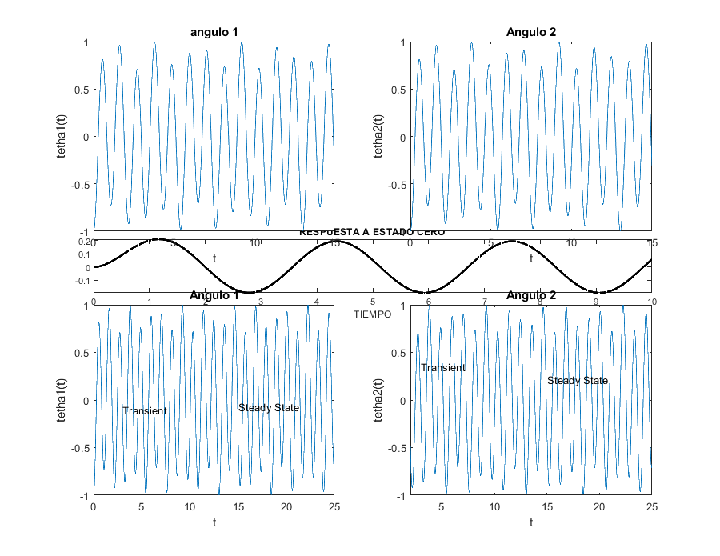 PROBLEMA 3
Del link proporcionado en las instrucciones donde se encuentras varias aplicaciones desarrolladas en Simulink, realice:
- Explique el problema y la implementación
El sistema de péndulo invertido consta de un péndulo rígido montado en un carro que puede moverse a lo largo de una pista horizontal. La tarea es diseñar un controlador que aplique una fuerza al carro para mantener el péndulo en posición vertical a pesar de su tendencia natural a caer. El sistema se puede describir mediante las ecuaciones diferenciales de movimiento que relacionan la fuerza aplicada al carro con el movimiento del carro y el péndulo. Estas ecuaciones consideran la masa del carro y del péndulo, la longitud del péndulo, y las fuerzas gravitacionales y de fricción.
El diagrama de Simulink representa visualmente el sistema del péndulo invertido, incluyendo bloques para el modelo del sistema, el controlador, los sensores y los actuadores. Los bloques están conectados entre sí para formar un circuito cerrado de retroalimentación.
Tenemos 4 diferentes componentes en el modelo:
- Carro y péndulo: Un bloque que representa la dinámica del carro y el péndulo. Este bloque toma como entrada la fuerza aplicada al carro y produce como salidas la posición del carro y el ángulo del péndulo.
- Controlador: Un bloque que calcula la fuerza a aplicar al carro basada en la retroalimentación de la posición del carro y el ángulo del péndulo. Este controlador puede ser un controlador PID o un controlador LQR.
- Sensores: Bloques que miden la posición del carro y el ángulo del péndulo. Estas mediciones se usan como retroalimentación para el controlador.
- Actuadores: Un bloque que aplica la fuerza calculada por el controlador al carro.
- Reproduzca los resultados Utilizamos el siguiente codigo para hacer uso de la aplicación PENDULO
open_system('penddemo') simOut = sim('penddemo'); t = simOut.tout; x = simOut.logsout.getElement('Cart Position').Values.Data; theta = simOut.logsout.getElement('Pendulum Angle').Values.Data; figure; subplot(2,1,1); plot(t, x); title('Posición del Carro'); xlabel('Tiempo (s)'); ylabel('Posición (m)'); subplot(2,1,2); plot(t, theta); title('Ángulo del Péndulo'); xlabel('Tiempo (s)'); ylabel('Ángulo (rad)'); %
The feature 'RTWTesting' has already been registered.
Tenemos el siguiente modelo en SIMULINK
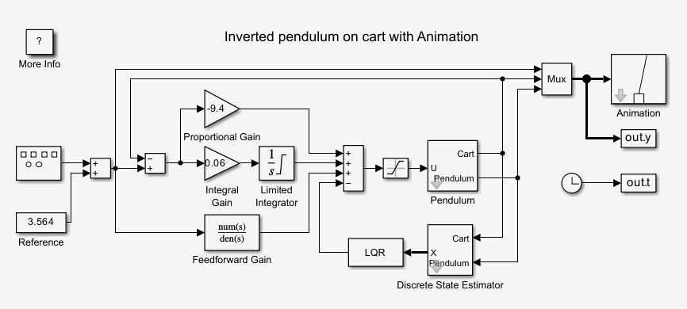
Así como la aplicación interactiva para el usuario donde vemos como funciona dicha aplicacion
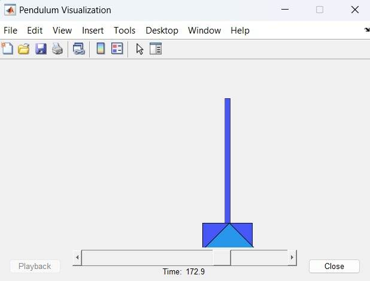